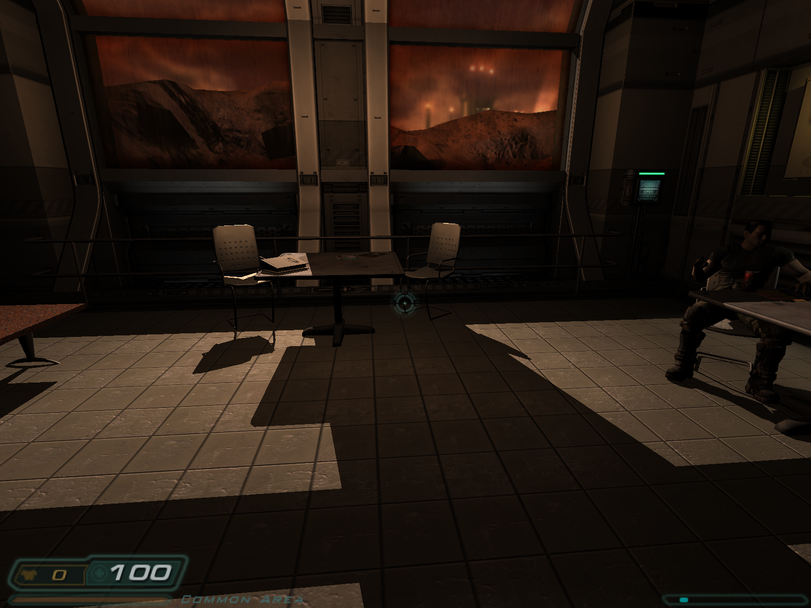
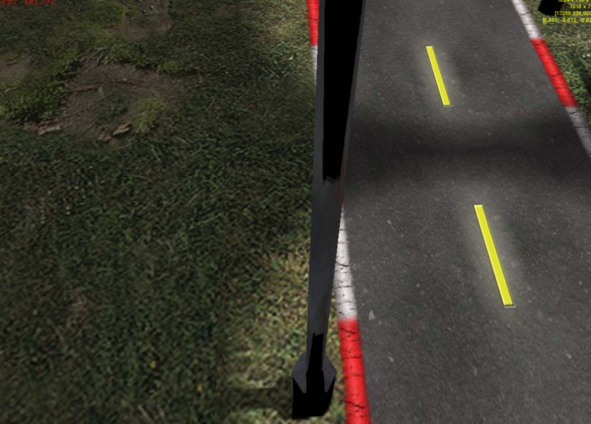
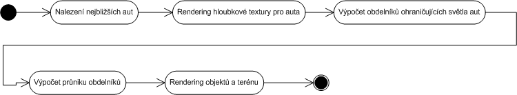
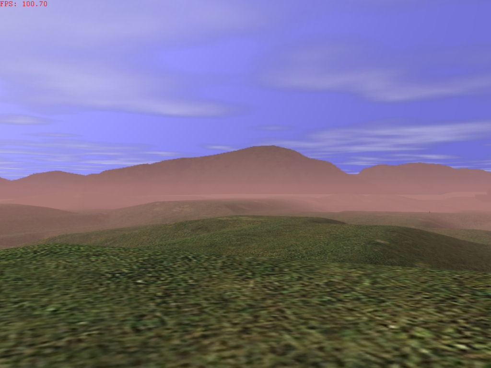

Nejobsáhlejší èástí našeho projektu se stal grafickı engine. Nedali jsme si za úkol vytvoøit engine srovnatelnı se souèasnımi herními tituly, pøesto však jsme se chtìli seznámit s moderními technikami, pøípadnì nìkteré z nich (i v zjednodušené podobì) implementovat. Vıvoj grafického modulu byl také velkım zdrojem problémù. V prùbìhu vıvoje jsme naráeli na nedostateèné zkušenosti a znalosti architektury grafickıch procesorù, na rozdíly èi nekompatibilitu jednotlivıch produktù (i pocházejících od jednoho vırobce) èi chyby v ovladaèích grafickıch karet. Napsanı kód bylo potøeba testovat vdy na co nejvíce grafickıch kartách (pøinejmenším vdy na zástupcích firem ATi a nVidia), upravovat tak, aby fungoval správnì na co nejvìtší mnoinì, a pøípadnì psát zvláštní kód pro konkrétní typy. V dokumentaci do takové hloubky nezacházíme, vìtšinou se jedná o ryze implementaèní záleitosti na úrovni shaderù. Tematicky pøecházíme v této èásti dokumentace od základních pojmù nutnıch k pochopení práce grafického enginu a grafického hardwaru, pøes teoretickı popis algoritmù a technik, které jsme pouili, a k samotné implementaci na úrovni tøíd, pøípadnì nejdùleitìjších funkcí. Teprve v závìru se budeme zabıvat samotnım zobrazovacím procesem. Postup vıkladu jsme zvolili tak, aby mìl ètenáø postupující od zaèátku do konce vdy dostateènı informaèní základ potøebnı k plnému pochopení popisovaného.
Mluvíme-li o real-time renderingu na bìnıch uivatelskıch poèítaèích, mluvíme o renderingu za pomoci grafického hardwaru. Tato èást si klade za úkol vysvìtlit, jakım zpùsobem se provádí rendering na dnešních grafickıch kartách za pomocí knihovny Direct3D 9.0. Má tedy slouit jako shrnutí nezbytného základu znalostí ohlednì real-time poèítaèové grafiky. Jestlie je ètenáø znalı této problematiky, èi dokonce znalı knihovny DirectX 9.0 (Direct3D 9.0), mùe tuto èást pøeskoèit.
Ke komunikaci s grafickou kartou se vyuívají knihovny (DirectX, OpenGL), které následnì komunikují s ovladaèi (drivery) grafické karty. Ovladaè grafické karty poté posílá informace v patøiènì upravené formì na grafickou kartu, která vykonává samotnı proces renderování (zobrazování) scény (toho, co chceme zobrazit). Tím je vıraznì sníena zátì procesoru poèítaèe, kterı se nemusí zabıvat èinností, ve které nevyniká. Specializovanı hardware grafické karty zobrazení scény vykonává mnohem efektivnìji.
V našem pøípadì budeme popisovat prùbìh renderingu na grafické kartì za pouití knihovny DirectX 9.0, konkrétnì její èásti pro zobrazení grafické scény - Direct3D. Dá se ovšem pøedpokládat, e prùbìh renderování na grafické kartì za pomocí napøíklad OpenGL bude velice podobnı.
Obrázek 2.1: Jednotlivé fáze renderingu
Na zaèátku procesu zobrazení stojí data vrcholù (vertices) geometrie a informace o jejich vzájemné poloze, takzvané indexy (indices). Vrcholy jsou jednotlivé body v prostoru mající svoji pozici, ke kterım mùe bıt pøièlenìna dodateèná informace jako je napøíklad nìkolik texturovıch souøadnic, normála, váha bodu, ... Pomocí Direct3D se mohou renderovat následující typy primitiv: seznam bodù, seznam úseèek, pás úseèek, seznam trojúhelníkù, pás trojúhelníkù a vìjíø z trojuhelníkù. Nìkteré typy mají jasnì dané uspoøádání vrcholù (tak, jak jsou za sebou), napøíklad pás trojúhelníkù, u jinıch se musí dodat indexy do pole s vrcholy. Napøíklad u seznamu trojúhleníku vdy trojice indexù urèuje danı trojúhleník. Programátor nastaví zdroje dat (streams) vrcholù a indexù a poté zavolá nìkterou z vykreslovacích funkcí Draw* (DrawPrimitive, DrawIndexedPrimitive, ...), èim se spustí samotnı proces renderování. Obvykle se renderují trojúhelníky.
Následnì grafická karta provede teselaci. Tím vyøadí z následujícího zpracování vrcholù ty, které jsou odvrácené od pozorovatele. Potom následuje zpracování jednotlivıch vrcholù, které se pomocí transformaèních matic transformují do post-projekèního prostoru. Tyto transformaèní matice takté nastaví programátor pøedtím, ne spustí samotné renderování daného objektu nebo èásti objektu (reprezentovaného napøíklad seznamem trojúhelníkù). Obvykle se jedná o matici, která transformuje objekt do svìtovıch souøadnic z lokálního souøadného systému daného objektu (World matrix), dále o matici která reprezentuje transformaci objektu do prostoru pozorovatele (View matrix). Ten je urèen místem, ze kterého je pohlíeno na scénu (oznaèujeme za pozici pozorovatele nebo kamery). A nakonec se provede perspektivní transformace pomocí perspektivní matice (Perspective matrix), která transformuje vrchol do post-perspektivního prostoru. Programátor mùe nastavit ještì další transformace jako napøíklad transformaci texturovıch souøadnic, které jsou neseny ve vrcholu. Dále se pro kadı vrchol mùe spoèítat osvìtlení - obvykle podle phongova osvìtlovacího modelu (viz kapitola Svìtla). Toto je nejbìnìjší zpùsob, jakım se všechny vrcholy zpracovávají. Existují pochopitelnì i další zpùsoby, ale nechceme tu zabíhat do pøílišnıch podrobností.
Pak nastává geometrické zpracování, které vezme vrcholy trojúhelníku, transformuje je do prostoru závìreèného zobrazení, a po jednotlivıch pixelech je rasterizuje (kreslí do 2D møíky obrazovky) na vıslednı obrázek. Kadı kreslenı pixel je zvláš zpracováván, co obnáší vıpoèet barvy pixelu, kterı se obvykle skládá z osvìtlení aplikované na texturu èi textury v daném bodì. Textury se ètou pomocí texturovıch samplerù. Texturovı sampler dostane souøadnici bodu v textuøe a pøeète ji nebo provede interpolaci nìkolika nejbliších bodù (obvykle ètyø - lineární interpolace), aby dostal vìrohodnìjší barvu textury v daném bodì textury. Barvu vrátí do zpracování pixelu, kde se ještì mùe promíchat (blend) s dalšími barvami textury.
Obrázek 2.2: Pøesnı prùbìh zpracování jednotlivého pixelu a do zápisu do vısledného obrázu
Po zpracování pixelù následuje hloubkovı test (té z-test), kde se otestuje, jestli je danı pixel viditelnı nebo jestli ho u pøekryl nìjakı další pixel (z jiného objektu, trojuhelníku), a proto by se právì zpracovávanı nemìl vykreslit. Hodnota hloukové souøadnice pixelu se testuje oproti hlobkovému bufferu (Depth buffer nebo té z-buffer), kde je uloena hloubka (zpravidla z-ová souøadnice) vykresleného pixelu na daném místì. Pokud pixel projde hloubkovım testem, mùe se otestovat oproti stencil bufferu. Stencil buffer je celoèíselnı buffer, kterı nìjakım zpùsobem maskuje èást scény. To, jakım zpùsobem pøesnì se stencil buffer pouije, závisí na tom, èeho chce programátor dosáhnout. Chce-li napøíklad renderovat jenom do urèité èásti vısledného obrazu, potom pouije hodnotu 1 jako "renderuj" a hodnotu 0 stencil bufferu jako "nerenderuj" danı pixel. Projde-li pixel i stencil testem, provede se na nìm vıpoèet mlhy, pokud si tak programátor pøeje a vıpoèet mlhy zapnul. Nakonec se barva pixelu mùe promíchat s barvou, která je ji uloená ve vısledném obrázku. Je také moné nastavit masku na zápis do obrazu.
Je vidìt, e jednotlivé èásti jdou postupnì za sebou, co umoòuje grafické kartì provádìt proudové zpracování dat. Tj. napøíklad zpracovává-li se jeden vrchol transformacemi, mùe se jinı trojúhleník ji rasterizovat. Tímto je dosaena vysoká efektivita zpracování.
Pøed tím, ne je moné spustit samotnı proces renderování, je potøeba provést nìkolik úkonù. Pøednì inicializovat samotnou knihovnu Direct3D. Potom vytvoøit cílovı buffer pro obraz (render target), tj. to, kam se vıslednı obraz renderuje, k nìmu vytvoøit pøidruené buffery - depth buffer, pøípadnì stencil buffer. Dále nahrát geometrická data do vertex bufferù a index bufferù, nahrát textury do pamìti (buï grafické karty nebo do hlavní pamìti poèítaèe). Poté se indikuje, e se zaèíná renderovat scéna. Smae se obsah render targetu (cílového obrazu) a pøidruenıch bufferù. Renderují se jednotlivé objekty, èástí objektù, seznamy trojuheníkù, body.
Pøed kadım zavoláním samotné kreslící funkce Draw* se obvykle musí nastavit zdroje dat - vertex buffery, index buffery. Dále se mohou nastavit potøebné textury, zpùsoby ètení dat z textur - nastavení samplerù textur, transformaèní matice (obvykle world, view, perspective), podmínky testování oproti bufferùm atd. Vıèet moností je obrovskı.
Nakonec se indikuje, e renredování skonèilo a zavolá se funkce Present, která obrázek zobrazí na obrazovku.
Moderní real-time rendering vyaduje pouití grafickıch programù, které bìí pøímo na grafické kartì. Tyto programy se jmenují shadery. Shadery umoòují programátoru grafické aplikace vìtší kontrolu nad zpùsobem, jakım se scéna zobrazuje. V pøípadì, e chceme v aplikaci naplno vyuít moností dnešních grafickıch karet, nezbıvá nám jiná monost, ne pouívat programy pro grafickou kartu (shadery). Proto jsme se i my v našem projektu rozhodli shadery pouívat. To nám pøedevším umonilo vıraznì vylepšit celkovı vzhled renderované scény. Efekty jako vlnící se tráva èi per-pixel osvìtlení terénu a auta jsou umonìny právì a jenom díky shaderùm. Pouití shaderù s sebou pøináší však nutnost mít framework, wrapper, kterı umí shadery pro grafickou kartu naèítat a dovoluje grafickému enginu s nimi manipulovat. Tento framework pøedstavuje v našem programu tøída CShaders.
Existuje nìkolik druhù shaderù, programù pro grafickou kartu. Dìlit je mùeme jednak podle zpùsobu pouití, jednak podle vyspìlosti hardwaru, na kterém shadery bìí. S postupnım vıvojem grafickıch karet je dovoleno psát komplexnìjší a sloitìjší shadery. Dnešní generace grafickıch karet (rok 2006) podporuje verzi shaderù 3.0. Pøedchozí verze shaderù jsou 1.0, 1.1, 1.4 a 2.0. Obecnì se dá øíct, e od verze shaderù 1.4 jsou shadery nástrojem, se kterım je u moné toho hodnì udìlat. Rozdíly mezi jednotlivımi verzemi shaderù spoèívají zejména v poètu povolenıch instrukcí v jednom programu shaderu a poètu funkcí, které daná verze shaderu musí nativnì (intrinsic) podporovat. My jsme se rozhodli pouít shadery verze 2.0. To zejména proto, e verze shaderù 1.0 a 1.1 nemìly nìkteré funkce, instrukce, které jsme potøebovali pouít, a verze shaderù 1.4 má nízkı limit instrukcí, do kterého by se naše programy pro grafickou kartu nevešly.
Podle zpùsobu pouití se shadery dìlí na pixel shadery a vertex shadery. Vertex shadery zajišují transformaci geometrie po jednotlivıch vrcholech. To znamená, e program vertex shaderu je zavolán pro kadı vrchol (vertex) právì renderovaného objektu scény. Vertex neobsahuje obvykle jenom polohu v prostoru objektu, ale také napøíklad texturové souøadnice, normálu (slouí pro vıpoèet osvìtlení) atp. To znamená, e vertex shader neumoòuje transformovat jenom polohu bodu v prostoru, ale takté provádìt rùzné operace s texturovımi koordináty, poèítat osvìtlení v daném bodì atd.
Pixel shadery se naopak provádìjí pro kadı potenciálnì vykreslenı bod renderovaného objektu. Pixel shader umoòuje zejména mìnit vıslednou barvu bodu (pixelu) a jeho hloubku ve scénì. Pixel shadery se zejména pouívají na per-pixel vıpoèet osvìtlení, zapoèítání, jestli se danı bod nachází ve stínu nebo ne atp.
Vertex shadery nahrazují èást zpracování vrcholù, zatímco pixel shadery nahrazují èást zpracování pixelù na grafické kartì. (Viz Fáze renderingu).
Shadery jako takové se pro knihovnu Direct3D píší v jazyce HLSL (High Level Shading Language), kterı je podobnı jazyku C++. Má ovšem nìkteré odlišnosti jako pøiøazení promìnnıch jednotlivım registrùm (texturové, barevné, hloubkové, ...) a vylepšenou podporu práce s vektory a maticemi do velikosti 4x4. V programu je potom potøeba shader nahrát a pøeloit do assembleru, co zajišují funkce knihovny Direct3D. Pøi pouívání shaderù je z programátorského hlediska v programu navíc potøeba nastavit dané shadery (jeden vertex a jeden pixel shader) a nastavit konstantní promìnné v shaderech, které se nemìní po dobu jednoho zavolání nìkteré z funkcí Draw*. Nakonec je nutné nastavit formát vstupních dat a potom u je moné spustit renderování daného objektu èi jeho èásti. Protoe je takovıch programù pro grafickou kartu obvykle mnoho, je potøeba je nìjak efektivnì spravovat. K tomu slouí shader framework reprezentovanı tøídou CShaders.
Obrázek 2.3: Shader framework má za úkol:
Resource manager nahraje vertex shader a prostøednictvím grafického jádra ho pøedá do tøídy CShaders. Ta mu následnì pøiøadí jedineènı klíè (handle), podle kterého je shader jednoznaènì identifikován. Dále se zjistí názvy všech konstantních promìnnıch, které shader pouívá. Kadému názvu konstantní promìnné je také pøiøazen jedineènı klíè a mapování mezi tímto klíèem a názvem promìnné je uloeno do tabulky. Jestlie takovı název promìnné ji existuje, je mu pøiøazen stejnı klíè jako existujícímu názvu. To zjednodušuje práci, protoe stejné názvy promìnnıch díky tomu musí znamenat stejnou vìc. Vıhoda toho je ta, e uivateli frameworku si staèí vyzvednout jedineènı klíè k názvu pouze jednou a poté ho celou dobu pouívá k nastavení konstantní promìnné v shaderu, a se jedná o jakıkoliv shader. Nevıhodou je fakt, e nìkdo mùe pouít stejnı název konstantní promìnné na nìco úplnì jiného v programu shaderu a mùe nastat nepøíjemná chyba. Aby se takové situaci zabránilo, kontroluje se pøi naèítání shaderu typ promìnné. Jestlie je ve dvou rùznıch shaderech tedy pouit stejnı název konstatní promìnné a její typ je rùznı, shader framework zahlásí pøi naèítání chybu. V pøípadì, e jde o stejnı typ promìnné se stejnım názvem, automatická kontrola nic nepozná, take programátoøi si musí takovı scénáø ohlídat sami, aby nedošlo ke špatnému pouití. To je ovšem také nepravdìpodobné, protoe programátor je povinen nastavit nejdøíve shader, ne zaène nastavovat jeho jednotlivé konstantní promìnné.
Protoe konstantní promìnnou mùe bıt nejen struktura, ale také pole, èi dokonce kombinace vnoøené struktury ve struktuøe, pole struktur atp., prochází se ještì samotná struktura konstantní promìnné a vytváøí se rozšíøená tabulka s handly jednotlivıch podnázvù tak, jak jdou za sebou ve struktuøe, resp. jak jdou za sebou prvky v poli (prvky pole mají pøednost pøed prvky struktury). Tyto jednotlivé podnázvy se u ale nepøidávají do tabulky mapování mezi jmény a handly. Tuto rozšíøenou tabulku handlù si však uivatel mùe vyzvednout.
Pøi procházení konstantních promìnnıch si dále shader framework zapamatuje mapování mezi vlastními handly konstantních promìnnıch a interními handly, které pouívá knihovna Direct3D a jsou pro kadı shader jinı.
Uchování shaderù se dìje zvláš pro pixel a pro vertex shadery. Shadery jsou uchovávány v poli. Ke kadému shaderu v poli je pøiøazena bitová mapa, která uchovává mapování mezi handly konstatních promìnnıch a interními handly, které pouívá knihovna Direct3D.
Shader framework nastaví shader knihovnì Direct3D podle handlu, kterı je mu pøidìlen pomocí funkcí SetPixelShader() a SetVertexShader(). Po nastavení shaderu je potøeba nastavit jednotlivé konstantí promìnné pro danı shader.
Nastavení konstantních promìnnıch pro danı shader se provádí pomocí funkcí SetVS*(), resp. SetPS*(). Konstantní promìnné se nastavují pomocí svıch handlù. Po kadém nastavení shaderu je tøeba nastavit znovu všechny konstantní promìnné. U vertex shaderù jsou z této potøeby opìtovného nastavování vyjmuty matice World, View, Projection matrix a jejich kombinace WorldView a WorldViewProjection. To v pøípadì, e se v shaderovém programu pouívají tyto matice pod názvy: WorldMat, ViewMat, ProjectionMat, WorldViewMat, AllMat. Tato vıjimka byla zavedena z dùvodu, e by bylo pracné neustále nastavovat tyto matice pro kadı vertex shader. Tyto matice se èasto pouívají, prakticky v kadém vertex shaderu alespoò nìkterá.
Dále jsou nìkteré názvy oproštìny od nutnosti získávat jejich handle podle jména. Jsou jim handly pøiøazeny implicitnì. Jedná se o názvy: AllMat, WorldViewMat, ViewMat, WorldMat, ProjMat, Material, MaterialPower, Ambient, Specular, DirLight a SpotLight.
Handly na shadery se získávají pøi nahrávání daného shaderu funkcí Load*().
Handly na konstatní promìnné, pokud nejsou implicitní, se mohou získávat pouze mezi voláním BeginShaderConstantFetch() a EndShaderConstantFetch(). Handly konstatních promìnnıch se získávají voláním funkce GetHandleByName(). Tato ochranná sekce byla do frameworku pøidána z toho dùvodu, aby donutila uivatele frameworku vyzvednout si všechny handly konstantních promìnnıch ji pøi inicializaci programu, po nahrání shaderù. Pøi renderování v renderovací smyèce by bylo získávání handlù pomalé a neefektivní. Sice to není opatøení typu uivatel musí, ale autor vìøí, e je to dostateèné na to, aby se uivatel nad tím zamyslel a pouil shader framework efektivním zpùsobem.
Hlavním znakem shader frameworku je to, e uivatel shader frameworku ji nepracuje se stringy, ale s handly, s nimi je práce mnohem efektivnìjší. Navíc je mapování handlù uloeno v bitovıch mapách, co umoòuje jejich rychlé vyhledávání. Tìmito pøístupy jsme se snaili framework urychlit do co nejvyšší moné míry.
Uivatel nahraje shadery a vyzvedne si jejich handly. Poté si vyzvedne handly konstatních promìnnıch. Pøi renderování nastaví zvolenı vertex a pixel shader a teprve poté všechny konstantní promìnné. Transformaèní matice mùe naproti tomu nastavit kdykoliv.
Termín Level of Detail (zkrácenì LOD) je jedním z nejpodstatnìjších v real-time grafice. V obecném pojetí jde o techniku sniování komplexnosti zobrazovanıch dat v závislosti na jejich vzdálenosti od pozorovatele. Uitím perspektivní projekce, která se vzdáleností objektu od pozorovatele ubírá na jeho velikosti (co odpovídá našemu vnímání okolí), se sniuje vliv kadého vzdáleného objektu na vıslednı obraz, a tedy i jeho vıznam pøi zobrazování. Proto je neádoucí plıtvat vıpoèetní kapacitou procesorovıch jednotek na tyto objekty. V praxi to znamená, e objekty, které jsou dále od pozorovatele, se renderují jinou technikou, v jiné podobì, s jinou geometrií, nebo dokonce vùbec(!) Existuje ji nepøeberné mnoství popsanıch pøístupù k implementaci této techniky, pro hlubší porozumìní je moné doporuèit knihu Level of Detail for 3D Graphics. Vıvoji efektivního a kvalitního LODu se dají vìnovat (a mnohımi vıvojovımi tımy jsou mu vìnovány) roky vızkumu a programování. To samozøejmì nebylo v našich silách, proto jsme hledali variantu pøijatelnì úèinnou a dostateènì jednoduchou k implementaci. Nakonec jsme i zde vyuili políèkového pohledu na scénu a navrhli a implementovali velmi snadnou metodu tzv. diskrétního LODu.
Diskrétní varianta LODu spoèívá v tom, e je pro kadı objekt scény pøedem pøipravena sada modelù, z nich se v kadou chvíli vybírá jeden, kterı se zobrazí. Vıbìr samozøejmì probíhá na základì vzdálenosti objektu od pozorovatele. I samotnı vıpoèet vzdálenosti objektù od pozorovatele mùe trvat dlouho, nebo je provádìn pro kadı objekt scény (korektní urèení vzdálenosti zahrnuje vıpoèet odmocniny), a právì zde jsme vyuili zaøazení objektù do diskrétní møíky polí mapy. K urèení volby kvality modelu se pouije poloka dvourozmìrné ètvercové matice (naèítána ze souboru .lodMap) namapovaná na pole mapy tak, e její støed je umístìn na pole, kde se nachází pozorovatel. Kadı prvek matice pak odpovídá jednomu poli mapy. Na polích, na nì není namapován ádnı prvek matice pro její pøípadnou menší velikost, se implicitnì pouije model nejniší dostupné kvality (to bıvá zpravidla jednobarevnı kvádr). Pøíklad pouití takové matice je vidìt na následujícím obrázku.
Obrázek 2.4: Namapování matice definice úrovní detailu na herní mapu; kamera je umístìna na svìtlém poli; vyšší èíslo udává komplexnìjší model, na nepokrytıch polích se vdy pouije stejnı jako pøi nule
Takovıchto matic existuje hned nìkolik. Jedna pro LOD terénu, jiná pro objekty a jiná pro trávu. To umoòuje snadnou nastavitelnost kvality zobrazování kadé ze zmínìnıch èástí zvláš (nastavení "Model quality" ve høe tedy ve skuteènosti pouze volí správnou matici z nìkolika pøeddefinovanıch). Zatímco u objektù nenese uití diskrétní varianty LODu ádné potíe (a díky tabelování poloek je extrémnì rychlé), pro terén je situace daleko sloitìjší. Terén je toti sestaven z na sebe navazujících èástí a diskrétní LOD znamená pouít v mnohıch pøípadech dvì rùzné úrovnì detailu vedle sebe. Tento problém více rozebíráme v kapitole o terénu.
Dùsledkem zavedení diskrétního LODu je èasto viditelná zámìna modelu objektu pøi pøechodu z jednoho pole mapy na druhé (nìkdy se zcela zmìní geometrie, co je patrné zvláštì v niších nastaveních kvality zobrazování ve høe). To se dá samozøejmì potlaèit (nebo pøinejmenším utlumit) pouitím komplexnìjšího modelu do vìtších vzdáleností, tj. tak daleko, aby zmìna ji nebyla patrná. To ovšem mírnì potlaèuje vıhodu LODu jako takového. Celkem je tedy tøeba øíci, e vytváøení modelù a jejich umisování do vzdáleností je pøedevším záleitost citu pro kompromis. Na následujících obrázcích mùete vidìt 4 modely barelu, kadı o jiném poètu polygonù. Ve høe pak s nastavením vyšší kvality modelù není vidìt ádnı pøechod, pøestoe v dálce je barel tvoøen pouze 16 trojúhelníky.
Obrázek 2.5: 4 rùzné modely jednoho objektu ve høe: a) 16 trojúhelníkù, b) 32 trojúhelníkù, c) 188 trojúhelníkù, d) 236 trojúhelníkù.
Pro objekty je definováno 10 úrovní detailu, kadı tedy mùe bıt reprezentován maximálnì 10 rùznımi modely. Pokud jich má ménì, jsou nìkteré modely pøiøazeny více úrovním. Pøiøazení modelù úrovním detailu nìjakého objektu je specifikováno v souboru formátu .modelDef.
Rùzné druhy svìtel v naší aplikaci hrají podstatnou roli v celém renderovacím modelu. Dobøe vypadající osvìtlení pøidává na realistiènosti zobrazované scény. V naší aplikaci pouíváme následující druhy svìtel:
Pouitı osvìtlovací model je odvozenı z Phongova osvìtlovacího modelu.
Svìtlo reflektoru od auta je kuelovım svìtlem. Tzn., e oblast, do které vrhá svìtlo, je dána úhlem a vzdáleností dosvitu. Aèkoliv je typické, e auto má taková svìtla vepøedu dvì, v naší aplikaci je dovoleno pouze jedno svìtlo typu reflektor u auta na jedno auto. To je z dùvodu pøílišné nároènosti vıpoètu osvìtlovacího modelu pøi zobrazování scény. Pøi správném a uváeném umístìní jednoho reflektoru auta je moné dosáhnout efekt velice podobnı dvìma reflektorùm. Svìtlo reflektoru auta se definuje v souboru *.light.
Svìtlo od lampy je kuelovım svìtlem s texturou osvìtlení (tzv. light map) pouitou na terén. Místo pøímého vıpoètu osvìtlení terénu lampou se pouívá pøedpoèítaná textura osvìtlení, co vıraznì sniuje nároènost vıpoètu (navíc tøeba brát v potaz, e lamp mùe bıt ve scénì i 100 a více). Pro osvìtlení objektù se svìtlo od lamp poèítá, ale díky omezenému dosvitu se znaènì redukují nutné vıpoèty. Textura osvìtlení musí bıt èernobílá, barva svìtla je pak pevnì definována pro všechny lampy. Svìtlo musí smìøovat pouze na políèko, kde lampa stojí, jinak nedojde k jeho zahrnutí do osvìtlovacího modelu. (I pro samotnou texturu osvìtlení platí, e je aplikována pouze na jediné pole pro kadou lampu.) Svìtlo od lampy se definuje v souboru *.light. Pokud není zadána textura osvìtlení, nebude terén lampou osvìtlen.
Smìrové svìtlo se pouívá k jedinému úèelu, a to kreprezentaci Slunce jako velmi vzdáleného svìtelného zdroje. Slunce je od Zemì natolik daleko, e se paprsky svìtla smìøující k Zemi dají povaovat za paralelní. Toto zjednodušení umoòuje vıraznì rychlejší vıpoèet svìtla od Slunce pro renderovanou scénu. Pro terén je navíc osvìtlení Sluncem pøedpoèítáno do svìtelné textury (viz kapitola Terén), pro objekty se musí poèítat za bìhu. Zvláštní pøístup jsme pojali k autu (jakoto jednomu z hlavních grafickıch prvkù ve høe), pro nì se poèítá osvìtlení Sluncem v kadém renderovaném pixelu (je-li tak povoleno zapnutím "per-pixel car lighting" v konfiguraci), navíc s realistiètìjším osvìtlovacím modelem (viz níe). Pro terén se díky pøedpoèítané svìtelné texturì poèítá svìtlo de facto také pro kadı pixel. Svìtelná textura pro terén nejenom zrychluje renderování scény, ale také nám pomáhá skrıt problém s osvìtlením, kterı nastává mezi políèky terénu díky nevhodnì navazujícím normálám. Barva smìrového svìtla se dá ovlivnit nastavením svìtelného modelu oblohy a nastavením denního èasu ve høe.
Svìtelnı billboard je nejjednodušším zpùsobem, jak nahradit poèítané osvìtlení a sloité svìtelné efekty. Jedná se o obrázek natáèenı vdy oproti pohledu pozorovatele tak, e jej vdy vidí èelem k sobì. Pomocí svìtelnıch billboardù jsou ve høe vytvoøeny svìtelné korony (hvìzdy) u lamp a pøedních a zadních svìtel aut, ale vzhledem k monostem konfigurace není tìké taková svìtla ve vìtším mnoství pøidat k jakımkoli objektùm. Svìtelnı billboard se definuje v souboru *.light.
Globální svìtlo je svìtlo, které je pøipoèítáno kadému pixelu scény bez ohledu na jeho umístìní èi natoèení plochy, kterou reprezentuje. Slouí jako aproximace odraeného a rozptıleného svìtla scény, které se jinım zpùsobem dnes (na stávajícím HW) nedá spoèítat za bìhu. Globální svìtlo se definuje v souboru mapy *.urmap.
Pouitı osvìtlovací model je odvozenı z empirického Phongova osvìtlovacího modelu, kterı je v plné èi zjednodušené podobì bìnì pouíván v real-time eginech. Mezi hlavní rysy kadého modelu patøí popis interakce svìtelného paprsku (èi svazku svìtelnıch paprskù) s objektem, pøednì zpùsob, jakım se paprsek odráí. (Objekty ve skuteèném svìtì odráí jen nìkteré paprsky v závislosti na jejich vlnové délce. Ty paprsky, resp. fotony, které objekt odrazí a které následnì dorazí do našeho oka, chápeme jako barvu objektu.) Odraz paprsku na povrchu objektu mùe bıt dvojího druhu - difusní a zrcadlovı. Pøi difusním odrazu se dopadlé paprsky na povrchu objektu rozptılí do všech smìrù vlivem mikroskopické struktury (mùeme øíci drsnosti) povrchu. Pro zrcadlovı (specular) odraz platí známı zákon odrazu: Úhel odrazu se rovná úhlu dopadu a odraenı paprsek leí v rovinì dopadu. Podle druhu odrazu nazıváme té dále se šíøící svìtlo difusní, resp. spekulární. V real-time enginech se zpravidla nepoèítá s vícenásobnımi odrazy svìtla (paprsky, která se ve scénì nìkolikrát odrazí a teprve poté dorazí k pozorovateli), nebo je to vıpoèetnì velice nároèné. Tyto vícenásobné odrazy s rozptylem jsou pøitom vıznamnou slokou osvìtlení reálného svìta, proto je tøeba je nahradit. Phongùv model nahrazuje tyto odrazy globálním svìtlem (tzv. ambient), které je konstantní pro celou scénu (bez nìj je plocha odvrácená od Slunce zcela èerná, pokud ji neozáøí jinı zdroj). Vzhledem k pouitému svìtelnému modelu a metodì zobrazení scény nevznikají vrené stíny od objektù. Musí se do scény dodávat umìle, paklie je chceme. Viz kapitola Stíny.
Phongùv osvìtlovací model se v naší aplikaci poèítá dvìma zpùsoby - pro vrcholy nebo pro pixely renderované scény. Jestlie se svìtlo poèítá pouze pro vrcholy, je posléze vısledná hodnota svìtla interpolována mezi vrcholy kadého trojúhleníku geometrie objektu (zpravidla bilienární interpolací). To pøedstavuje ménì pøesnı model osvìtlení ne metoda poèítání svìtla pro jednotlivé pixely, kdy se mezi vrcholy namísto svìtla interpoluje jejich normála, a teprve s touto pøesnìjší normálou se provádí vıpoèet osvìtlení. Metoda vıpoètu osvìtlení v pixelech, tzv. per-pixel lighting, je ovšem velmi nároèná na vıpoèetní kapacitu.
Následující rovnice ukazuje vıpoèet celkového svìtla pro jeden svìtelnı zdroj:
V uvedeném vzorci je Ld koeficient difusního svìtla, Md je difusní sloka materiálu objektu, Cd je barva difusního svìtla. Ls je koeficient spekulárního svìtla, Ms je spekulární sloka materiálu, Cs je barva spekulárního svìtla, Ca je barva ambientního svìtla a Ma je ambientní sloka materiálu objektu. Koeficienty Ld a Ls závisí na pouitém druhu svìtla, na vzájemné pozici pozorovatele a svìtla a na tvaru geometrie objektu. Zatímco difusní sloka vypovídá zpravidla o barvì objektu a jeho celkovém osvìtlení, ménì dùleitá spekulární sloka dodává na realistiènosti, nebo reprezentuje paprsky odraené od lesklého materiálu pøímo k pozorovateli. Spekulární sloka se v naší aplikaci pouívá jenom pro vıpoèet osvìtlení auta, kdy je zapnuta volba "per-pixel car lighting". Vlastnosti materiálu povrchu objektu (tj. Md a Ms) urèují mnoství svìtla, které se rozptılí, resp. odrazí, po jednotlivıch barevnıch slokách.
Koeficient Ld u smìrového svìtla se spoèítá podle vzorce
kde Dn je normalizovanı vektor smìru normály geometrie povrchu a Dl je normalizovanı vektor smìru smìrového svìtla. Lomené závorky znaèí skalární souèin. Tedy koeficient Ld závisí na kosínu úhlu mezi normálovım vertorem geometrie povrchu objektu a vektorem opaènım k smìrovému vektoru svìtla.
Koeficient Ls u smìrového svìtla vyjádøíme
Stejnì jako v pøedchozím vztahu vyjadøuje i zde Dl normalizovanı smìrovı vektor šíøení svìtla, Dw je normalizovanı vektor smìru od zkoumaného bodu k pozorovateli, Dn je normalizovanı normálovı vektor geometrie povrchu a Power je koeficient urèující lesklost (èi odrazivost) povrchu. Lomené závorky znaèí skalární souèin. Z uvedeného vztahu je patrné, e nejvìtší osvìtlení spekulárním svìtlem získají ta místa povrchu, u kterıch je malı úhel mezi smìrem k pozorovateli a smìrem odraeného svìtla. Vzhledem k tomu, e se lesklost materiálu ve vztahu projevuje jako mocnitel, jsou tato místa zpravidla velmi malá (èím lesklejší povrch, tím silnìjší odraené svìtlo, ale zároveò tím uší viditelnì zasaená plocha). Jak ji bylo zmínìno, jde o empiricky vytvoøenı model, uvedené rovnice nejsou pøímo zaloené na fyzikálních zákonech (pouze se je snaí napodobit).
Pro kuelová svìtla jsou vıpoèetní rovnice trochu sloitìjší. Poèítá se se dvìma kuely (vnitøní a vnìjší), které mohou mít vıraznì odlišnou intenzitu osvìtlení. Koeficient Ld u takového svìtla (reflektor auta, svìtlo od lampy) se spoèítá podle vztahu
v nìm první èást je stejná jako u smìrového svìtla, A je koeficient útlumu svìtla a S je koeficient závisející na vnìjším a vnitøním úhlu svìtla kuelu. Koeficient A se dá vyjádøit takto:
Dist je vzdálenost bodu geometrie od zdroje svìtla, Ac je konstantní koeficient útlumu, Al je lineární koeficient útlumu a Aq je kvadratickı koeficient útlumu.
Koneènì koeficient S vyjádøíme
ρ je úhel mezi smìrem svìtla a smìrem k bodu geometrie, pro kterı se svìtlo poèítá, φ je úhel rozsahu vnìjšího kuele svìtla, θ je úhle rozsahu vnitøního kuele svìtla a falloff je koeficient rychlosti útlumu svìtla mezi vnitøním a vnìjším kuelem.
Stíny jsou dùleitım faktorem pro prostorové vnímání a vnášejí do scény pocit realistiènosti. V dnešní real-time grafice jsou stíny velkım problémem. Ji v úvodní kapitole grafického enginu jsme rozebrali zpùsob vykreslování scény pomocí z-bufferu. Tento postup pouívanı vìtšinou souèasnıch grafickıch karet nám umoní osvìtlit povrchy objektù svìtelnımi zdroji, ale neumoní nám pøímo potlaèit osvìtlení tam, kde v cestì svìtlu brání nìjakı jinı objekt (vrhající stín). Vıpoèetnì sloitìjší je tedy objekt neosvìtlit (zjistit, e osvìtlen bıt nemá), ne osvìtlit. My jsme pojali navrení a implementaci dynamickıch stínù jako jeden ze základních kamenù grafického enginu, a proto jsme mu vìnovali znaènou èást doby vıvoje. Techniky, které jsme pouili, i vìtšinu problémù, se kterımi jsme se potıkali, se pokusím rozebrat v následujících odstavcích. Nejdøíve však krátce popíšeme metody, které se dají prakticky pouít pro implementaci stínu na dnešním hardware.
Algoritmus shadow volume spoèívá v tom, e se kadému objektu vygeneruje stínové tìleso reprezentující zastínìnı prostor. Takové tìleso se musí navíc vytvoøit pro kadou uspoøádanou dvojici (objekt scény, svìtelnı zdroj), nebo jeden objekt mùe vrhat nìkolik stínù (tolik stínù, kolik je zdrojù svìtla ve scénì). Pøi samotném renderování scény se pro kadı pixel urèí, zda leí v nìjakém stínovém tìlese patøícím zvolenému svìtelnému zdroji, a na základì toho se pixel buïto osvìtlí, nebo neosvìtlí danım svìtlem. Urèení, zda pixel leí v nìjakém stínovém tìlese, se zpravidla implementuje poèítáním pøivrácenıch a odvrácenıch stìn stínovıch tìles, nacházejících se mezi pixelem a pozorovatelem. Je-li poèet pøivrácenıch stran vìtší ne poèet odvrácenıch, znamená to, e je buïto pozorovatel, nebo pixel uvnitø nìjakého stínového tìlesa.

Obrázek 2.6: Ukázka shadow volume ze hry Doom 3 - ID Software.
Algoritmus shadow volume má nìkolik problémù. Pøednì nedokáe ve své základní verzi generovat mìkké stíny nebo alespoò stíny s mìkkımi okraji. Dále je vıpoèetnì velmi nároènı na procesor. Stínová tìlesa sama o sobì ji pøidávají na sloitosti scény, navíc pro dynamická svìtla nebo dynamické objekty je tøeba stínová tìlesa generovat v kadém snímku znovu. Další nevıhodou je problém s rozpoznáním situace, kdy pozorovatel stojí uvnitø nìjakého stínového tìlesa (pak klasickı algoritmus urèení zastínìní dává špatné vısledky, nebo do poètu pøivrácenıch stìn nejsou zahrnuty ty, které jsou za pozorovatelem). Aby tento problém bylo moné vyøešit, je tøeba vıraznì sloitìjší (implementaènì i èasovì) algoritmus na tvorbu stínovıch tìlese (ta musí bıt v takovém pøípadì korektnì uzavøena ze všech stran). To zahrnuje nutnost triangulovat sloité nekonvexní objekty (stále za bìhu aplikace a pro kadı snímek). Na druhou stranu pøináší shadow volume pomìrnì levné (vıkonostnì) stíny pro statické objekty osvìtlené statickım svìtelnım zdrojem, jejich stínové tìleso mùe bıt pøedpoèítáno ještì pøed zaèátkem renderování. Na obrázku 2.6 je vidìt typické pouítí algoritmu shadow volume na stíny v podání slavného Carmackova Doomu 3. I pøes všechny snahy o implementaci stínù v Doom 3 nebylo nakonec umonìno, aby objekt vrhal stín sám na sebe (aèkoliv to na obrázku není pøíliš zøetelné). Jinak se ale jedná o profesionální implementaci algoritmu shadow volume s mnoha optimalizaèními technikami jako napøíklad generování stínového tìlesa pomocí shaderù na grafické kartì.
Algoritmus shadow mapping spoèívá v tom, e se nejprve vyrenderuje hloubkovı obraz scény z pohledu svìtla a potom pøi renderování scény z pohledu pozorovatele se porovnává hloubka renderovaného pixelu pøevedená do prostoru svìtla s uloenım hloubkovım obrazem. Jestlie je hloubka pixelu menší ne hloubka v hloubkovém obrazu, je pixel osvìtlen a není ve stínu. Jestlie je ale vìtší, tak to znamená, e tomuto pixelu je zdroj svìtla zakryt a tudí je ve stínu, jak je vidìt na obrázku 2.7.
Obrázek 2.7: Ukázka pøípadu shadow mappingu, kde se pixel nachází ve stínu. Pøevzato ze slidù Shadow Mapping - Cass Everit - NVIDIA Corporation.
Algoritmus shadow mappingu je povaován za obecnìjší ne algoritmus shadow volume. Umoòuje napøíklad jednoduše stínovat i prùhledné objekty. Jeho vıhodou je, e se pøímo neváe na geometrii scény, s jistımi minoritními úpravami dokáe generovat mìkké okraje stínù a nezatìuje tolik procesor, èím mu umoòuje vìnovat se dùleitému poèítání fyziky, AI atd. Ovšem nevıhody jsou takté mnohé. Dá se øíci, e algoritmus shadow mappingu by dobøe fungoval v pøípadì, e by všechny textury byly spojité a nikoliv diskrétní a èíselná pøesnost floatu neomezená. Tak tomu není a vzniklé nepøesnosti rùznımi zpùsoby stín kazí , jak je vidìt na obr. 2.8. Ještì mnohem zøetelnìjší jsou ovšem problémy za bìhu programu, které se na statickém obrázku nedají poøádnì zachytit.
Obrázek 2.8: Ukázka shadow mappingu z profesionálního benchmarku 3DMark 2005. Je vidìt, e okraje stínu jsou divné a plavou.
Rozhodli jsme se testovat oba hlavní zpùsoby implementace stínù, jak shadow mapping, tak shadow volume. Napsali jsme základní verzi algoritmu shadow volume, která z pohledu svìtla generovala stínová tìlesa následujícím zpùsobem. Nejdøíve se nalezla silueta objektu z pohledu svìtla. Ta se dá aproximovat vıbìrem takovıch hran sítì trojúhelníkù, které patøí jednomu pøivrácenému a jednomu odvrácenému trojúhelníku. Procházely se tedy všechny pøivrácené trojúhelníky objektu a jejich hrany se vkládaly do dynamického seznamu hran. Pokud tam u taková hrana byla, znamenalo to, e patøí dvìma pøivrácenım trojúhelníkùm, a tedy není souèástí siluety. Taková hrana se ze seznamu vyjmula. Po projití všech pøivrácenıch trojúhelníkù se v seznamu hra nachází hrany tvoøící siluetu objektu. Pro nekonvexní objekty obsahuje seznam hran nìkteé hrany navíc, které nejsou èástí siluety, ale rozpoznávání takovıchto hran by vzalo pøíliš mnoho vıpoèetního èasu, proto jsou té povaovány za èást siluety; algoritmus zastínìní to lehce zpomalí, ale nepoškodí.
Pro takto nalezenou siluetu se vygenerovalo stínové tìleso protaením vrcholù okrajovıch hran ve smìru spojnice svìtelného zdroje a daného vrcholu. Novì vzniklé vrcholy se spojí hranami s pùvodními vrcholy siluety a vısledná sí se trianguluje (triviální operace, vzhledem k tomu, e sí je tvoøena rovinnımi ètyøúhelníky). Snadné není zvolit správné protaení, nebo zbyteènì velké trojúhelníky zpomalují rendering, ale trojúhelníky nesmí konèit uvnitø zobrazované scény (tzn. e musí bıt ukonèeny a za celou scénou, nebo alespoò za její viditelnou èástí). Pøi renderingu se v první verzi pouil stencil buffer na spoèítání pøivrácenıch a odvrácenıch hran. Jestlie hrana v daném pixelu byla pøivrácená pøièetla se do stencil bufferu jednièka, jestlie byla odvrácená jednièka se ze stencil bufferu odeèetla. Nakonec tedy jednièka ve stencil bufferu maskovala pixely, které byly ve stínu. Ve druhé verzi se tento postup pøevedl na poèítání uvnitø zvláštní textury, která mohla zachytit více stavù, a tedy i více rùznıch stínù; tím se stíny od rùznıch svìtel mohly navzájem pøekrıvat.
Popsaná technika se ukázala mít hned nìkolik nevıhod. Stínová tìlesa byla tvoøena pouze boèními stìnami, tedy bez podstav. V pøípadì takového úhlu pohledu pozorovatele, kdy "nahlédl" do nìkterého stínového tìlesa skrz neexistující podstavu, spoèítaly se pøivrácené a odvrácené stìny špatnì a stíny se "rozdrobily" (èásti vidìt byly, èásti ne, jinde se objevil tam kde nemìl). Dalším problémem byl vıpoèetní èas, nebo se vzrùstajícím poètem dynamickıch objektù ve scénì vzrùstal poèet tìles, která bylo potøeba generovat kadı snímek. Ukázalo se, e technika stínovıch tìles pøíliš zatìuje procesor. Nastudovali jsme další techniky, které by pravdìpodobnì vyøešily nìkteré problémy, ale vzhledem k implementaèní nároènosti jsme se rozhodli, e vıvoj algoritmu shadow volumu ukonèíme, nebo vıvoj shadow mappingu byl v této dobì ji dál a rozhodli jsme se spokojit s jedním druhem vıpoètu dynamickıch stínù.
Implementace shadow mappingu je obtíná zejména proto, e vyaduje, aby nìkolik transformaèních matic bylo nastaveno správnì. Byl vytvoøen speciální testovací projekt jenom na to, aby se povedlo metodu na jednoduchém prostøedí s jednou konvièkou a obdelníkem, na kterı vrhala konvièka stín, implementovat. Na tuto implementaci ji byly pouity shadery, protoe se ukázalo, e bez nich není implementace shadow mappingu prakticky moná. Problém nastal s pøenosem do naší hlavní aplikace Unlimited raceru, protoe ta v tìchto chvílích ještì programy pro grafickou kartu nepouívala. Z poèátku se myslelo, e bude moné napojit transformaèní èást fixního zpracování grafické karty (fixní zpracování je zpùsob renderingu pouívané pøed pøíchodem grafickıch programù - pro více informací se dá na internetu hledat fráze "fixed function pipeline" nebo konzultovat nápovìdu ke knihovnì Direct3D) na pixel shaderovı program, to se ovšem po urputné snaze ukázalo jako nereálné a vynutilo si to kompletní pøechod na shadery. Dnes s odstupem èasu mùeme konstatovat, e aèkoliv si tato zmìna vynutila radikální pøepracování návrhu celého zobrazovacího procesu i grafickıch objektù, byla to zmìna uiteèná, nebo otevøela nové implementaèní monosti, kterıch jsme se snaili nadále vyuít.
První testy stínování za pomoci shadow mappingu se provádìly na svìtle od lampy. Potom, co se povedlo nastavit všechny transformaèní matice správnì, se objevilo nìkolik dalších problémù. Na testovacím autì bylo zøetelnì vidìt velké mnoství artefaktù rùznıch druhù. Následující série obrázkù demonstruje nìkteré z chyb, kterımi byl (pøípadnì ještì je) shadow mapping zatíen, a poukazuje tak na to, s èím je nutné poèítat v pøípadì, e se rozhodnete tuto techniku pouít.
Obrázek 2.9: Rozkostièkování stínu - díky diskrétnosti hloubkové textury a skoro paralelním hranám nastává kostièkovı efekt v závisloti na tom, do jakého pixelu hloubkové textury se pøi testu stínování na daném pixelu zrovna trefí.
Obrázek 2.10: Další druh problému - pila na okrajích hran jednotlivıch stupòù stínù, kterı vznikl pokusem vyøešit pøedchozí problém zavedením speciálního filtrování, které dokázalo rozlišit 4 stupnì barevnosti stínu.
Obrázek 2.11: I takto bizardních stínù se v prùbìhu zkoušení povedlo docílit.
Obrázek 2.12: Vısledek pouití hloubkové textury s malım rozlišením a vícestupòového stínování.
Obrázek 2.13: Vızkum vrhání stínù byl rozsáhlı. Zde je ukázka pouití pokroèilé techniky filtrování stínu, která vytváøí mìkkı okraj stínu. Tato technika není v koneèné verzi pouita, protoe je pøíliš nároèná na grafickı hardware. Je však implementována.
Obrázek 2.14: I stín od lampy se umí poøádnì zkazit. Zde se jedná o pokroèilou techniku stínování pomocí shadow map, která byla publikována teprve v roce 2004. Její název je trapezoidal shadow mapping. V zadu je potom vidìt zelené auto, kde speciálnì vadí stìny rovnobìné se smìrem svìtla.

Obrázek 2.15: Snaha o zastínìní sebe sama (tzv. self-shadowing).
Obrázek 2.16: Jedinı dochovanı obrázek se stínem pomocí shadow volume. Technika je stále implementována, ale nìkteré zmìny provedené v jádru zobrazovacího procesu ji nedovolují pouít bez èasovì nároènıch úprav.
Nejvìtší problémy, které se ani ve finální verzi nepovedlo úplnì odstranit, byly se stìnami, které jsou témìø rovnobìné se zdrojem svìtla. Po èase jsme objevili chybu v osvìtlovacím modelu, která omylem zpùsobovala to, e plochy, které nemìly bıt osvìtlené, osvìtlené byly. Po odstranìní této chyby se mnoho artefaktù skrylo do vzniklého stínu a tudí nejsou ve finální verzi ve vìtšinì pøípadù vidìt. Tento problém èásteènì takté eliminuje zvıšení rozlišení hloubkové textury. Další problém zpùsobuje samotnı hloubkovı buffer, jeho pøesnost není neomezená. Zvláštì pokud se jedná objekty osvìtlené kuelovım svìtlem (je na autech, lampách), vzniká pøi transformaci perspektivní maticí, která kopíruje tvar kuelového svìtla, efekt nakupení hloubkovıch hodnot vzdálenıch objektù. Transformace perspektivní matice má toti takovou vlastnost, e hloubkovou hodnotu (øíkejme ji dále souøadnice z) pøemapuje z lineární na logaritmickou škálu. Tento efekt zpùsobí, e máme velké hloubkové rozlišení objektù v blízkosti svìtla, ale za to malé hloubkové rozlišení objektù dále od svìtla. Celá z-souøadnice se navíc pøemapovává do intervalu 0 - 1. (0 nejbliší, 1 nejvzdálenìjší) Pøièem perspektivní tranformace funguje tak, e pøevádí jehlan (pozorovatel je ve špièce jehlanu a dívá se do støedu základny) ze pøedu omezenı rovinou (near plane) a ze zadu omezenı rovinou (far plane) do kvádru. Body na near plane se namapují na hloubku 0. Body na far plane se namapují na hloubku 1. Souøadnice x a y z vnitøku jehlanu se namapují do interevalu od -1 do 1. To je zobrazeno na obrázku 2.17.
Obrázek 2.17: Nákres prùbìhu perspektivní transformace. Pøevzato z dokumentace k Direct3D.
Jak ji bylo napsáno vıše, provádí se pro kadı pixel v prostoru svìtla porovnání hloubek. Jestlie jsou ale hloubky pøíliš blízko, porovnání vrátí v nìkterıch pøípadech špatnı vısledek a stín se objeví tam, kde nemá. Z tohoto dùvodu se zavádí bias (posun objektù o urèitou vzdálenost), aby se zajistilo to, e plochy které mají bıt osvìtlené vdy budou a chyba se pøevedla na stranu stínu, kde se mùe stát, e tam kde má bıt stín, stín není. To ovšem vadí mnohem ménì, ne pøípad, kdy se objeví stín na místì, které má bıt osvìtlené. Nám se osvìdèil bias okolo 15 centimetrù. Trvalo nám ovšem nìjakı èas, ne jsme pøišli na nejvhodnìjší zpùsob, jakım bias aplikovat. Pokusy jsme provádìli s pøièítáním malé hodnoty pøímo v testu porovnání, ale vzhledem k logaritmické škále hloubky se to neosvìdèilo. Jako nejlepší se osvìdèilo posouvat dozadu objekty pøi renderování z pohledu svìtla o vıše zmiòovanou hodnotu. Alternativní moností k biasu je renderování odvrácenıch stìn modelu do hloubkového bufferu. Tuto monost jsme také zkoušeli, ale vısledek byl ve vìtšinì pøípadù horší ne øešení s biasem a tato metoda závisí na geometrii modelu. Tuto metodu jsme nakonec vùbec nepouili.
Obecnì se doporuèuje posunout near plane, co nejvíce k modelu nebo modelùm, ke kterım se snaíme získat hloubkovou mapu. Tuto techniku jsme nepouili, protoe vyaduje mít kolem kadého objektu nìjakou obálku minimálnì osovì orientovanı obalovı kvádr. V nìkterıch technickıch paperech publikovanıch na siggraphu se doporuèuje hloubku nejdøíve vyrenderovat, a potom celou hloubkovou mapu projít a najít nejmenší hodnotu. Tento pøístup je ale zcela prakticky nepouitelnı a naprosto a úplnì ho nedoporuèujeme (z dùvodu nepouitelnosti jsme ho dokonce ani nezkoušeli, i kdy jsme testovali kde co). Osvìdèila se nám ale hodnota near plane vzdálenosti 10 cm od pozorovatele. Jinak silnì nedoporuèujeme nastavovat near plane do vzdálenosti menší ne je jedna jednotka zvolená jako základní. Z poèátku jsme mìli near plane ve vzdálenosti 0,1 cm od pozorovatele a taková hodnota pøímo nesedìla perspektivní matici a celá perspektivní transformace se nechovala vzhledem k nakupení hloubkovıch hodnot dobøe.
Obecnì se dá øíci, e pøesnost hloubkové textury musí bıt aspoò 24 bitù, aby se dalo uvaovat o slušném stínování objektu na sebe sama (napøíklad zrcátko auta vrhající stín na dveøe od auta). Pøi 16 bitové pøesnosti se dá uvaovat jenom o stínování objektù bez stínování sebe sama.
Rozsáhle jsme takté experimentovali s rùznım zpùsobem filtrování stínù. V základní verzi shadow mappingu se vdy na jeden pixel obrazovky bere jenom jeden vzorek z hloubkové textury a ten se následnì porovnává s hloubkou bodu v perspektivním prostoru svìtla. To umoòuje dvì pozije - je stínováno a není stínováno. Je ovšem moné vzít více vzorkù (samplù) z hloubkové textury, kadı následnì porovnat s hloubkou bodu v perspektivním prostoru svìtla. Tím dostaneme více informací o tom, je-li na daném políèku stín. Napøíklad pro 9 vzorkù získáme 9 úrovní odstupòování stínu. Pøedstavuje to ovšem vìtší zátì pro program pixel shaderu. Tato technika se nazıvá percentage-closer filtering. Experimentovali jsme s poètem vzorkù na møíkách 2x2 a 3x3 v rùznıch uskupeních, jak pravidelnıch, tak vygenerovanıch pomocí náhodného generování technikou roztøesení (jitter). Zjistili jsme, e se pomocí této techniky dají vytvoøit pìkné mìkké stíny na okrajích zvláštì s pouitím møíky 3x3 s dostateènou velikostí bunìk møíky a generované technikou roztøesení. Nakonec jsme však vısledky nepouili, protoe to bylo pøíliš nároèné na grafickı hardware.
Spoleènost NVIDIA na svıch grafickıch kartách zavedla hardwarovou podporu shadow mappingu. Tuto podporu jsme se rozhodli vyuít, protoe vıraznì sniuje nároky na grafickou kartu a ještì navíc témìø zadarmo dává mìkké okraje stínù, bohuel jenom na velmi krátkou vzdálenost. Pøechod je však plynulı - mnoho odstínu stínu. Protoe ale ostatní spoleènosti vyrábìjící grafické karty v èele s ATI tuto podporu shadow mappingu nemají, vyadovalo veškeré stínování psát dvojí pixel shadery jedny pro NVIDII a druhé pro ostatní grafické karty. Vìøíme, e toto pøidalo na profesionalitì i kráse našeho projektu.
Protoe shadow mapy nedovolují ve své základní verzi ostínovat dostateènì velkou plochu, kterou je potøeba ostínovat v pøípadì e zdrojem svìtla je slunce, implementovali jsme novou techniku, která vylepšuje shadow mapping. Tato technika se jmenuje trapezoidal shadow mapping (lichobìníkové shadow mapy) a byla poprvé pøedstavena vìøejnosti v paperu, kterı se jmenuje: Anti-aliasing and Continuity with Trapezoidal Shadow Maps - Tobias Martin and Tiow-Seng Tan - Eurographics Symposium on Rendering (2004). Tato technika je zaloena na faktu, e celá plocha hloubkové textury není de facto úplnì vyuita. Ve standardním shadow mappingu existují místa zvláštì, pokus se jedná o stíny od slunce, která jsou úplnì mimo zornı úhel pozorovatele a pøesto se ve hloubkové textuøe nachází. Technika trapezoidal shadow mappingu nalezne lichobìník, kterım obalí oblast na, kterou se pozorovatel dívá a pouze hloubková informace z této oblasti uvnitø lichobìníku se uloí do hloubkové textury. Navíc se prostor textury vyuívá tak, e bliším objektùm k pozorovateli je dáno na textuøe více místa ne vzdálenım objektùm od pozorovatele. To zaruèuje lepší rozlišení stínu blíe k pozorovateli. Tohoto prostorového vyuití textury se dosáhne remapováním logaritmické hloubkové škály.
Ve høe rozlišujeme 3 druhy stínù podle toho, z jakého zdroje svìtlo pochází a to:
Stínování od slunce se provádí pouze v denním reimu pomocí trapezoidal shadow mappingu. Stínování od lamp a aut se provádí pouze v noèním reimu pomocí standardních shadow map.
Stínování jako takové je implementováno pøímo v grafickém jádru ve tøídìCGraphic a to pro kadı pøípad (slunce, auta, lampy) zvláš. Stíny od kadé z tìchto kategorií si vyadují zvláštní pøístup. Jako pomocné tøídy pro geometrické vıpoèty se pouívají tøídy CShadowMapping, TSM a ConvexHull. Vztahy jsou takové, jak popisuje obr. 2.18. Tøída CGraphic, která má za úkol samotné renderování, volá jako pomocné tøídy zejména pro geometrické vıpoèty tøídy CShadowMapping a TSM. Tøída TSM ještì pouívá algoritmus konvexního obalu, kterı je implementovanı ve tøídì ConvexHull.
Obrázek 2.18: Schéma stínovacího systému aplikace
Pro stínování od slunce se pouívá algoritmus trapezoidal shadow mappingu. Základ stínování od Slunce je implementován ve tøídì CGraphic ve funkci RenderDayScene(). Z tohoto místa se posléze volají další pomocné funkce. Prùbìh algoritmu stínování je následovnı:

Obrázek 2.19: Prùbìh renderování stínù od Slunce.
Aby nedošlo ke stínování mimo vymezenou plochu. Je v kroku 4 renderování hloubkové textury nastanena ochranná oblast o velikosti jednoho pixelu kolem celé hloubkové textury. Tato ochranná oblast zabezpeèuje, e se nevystínuje nic mimo vymezenou plochu.
Trapezoidal shadow mapping je specifická stínovací technika, která vylepšuje vzhled stínù lepším vyuitím prostoru hloubkové textury a remapováním škály hloubkové souøadnice. Nejvíce práce dá spoèítat transformaèní matici do lichobìníkové prostoru. (tj. matici transformující lichobìník obklopující pohledovı jehlan na ètverec) a nalézt samotnı lichobìník. Funkce ComputeTSMMatrix() je nejdùleitìjší funkcí tøídy TSM. V této funkci probíhá hledání lichobìníku z pohledu slunce obklopujícího ve 2D pohledovı jehlan. Hledání lichobìníku je provádìno ve shodì s popisovanou technikou v technickém paperu Anti-aliasing and Continuity with Trapezoidal Shadow Maps a vypadá následovnì:
Obrázek 2.20: Prùbìh vıpoètu lichobìníkové matice
Pro bliší porozumìní popisovanému vıpoètu lichobìníkové matice prostudujte vıše zmiòovanı tech paper nebo hledejte na internetu další zdroje.
Protoe celı tento geometrickı vıpoèet obsahuje místa, kdy se mùe zkazit. Jsou to rùzné pøípady degenerace. Paklie by to nastalo pouije se místo trapezoidal shadow mappingu axis-aligned shadow mapping, kterı se získá najitím obdelníku, do kterého spadá pohledovı jehlan pozorovatele. Ovšem v praxi se tato náhradní metoda zatím nemusela nikdy pouít. Vıpoèty se zdají bıt numericky stabilní a nekazí se.
Algoritmus vıpoètu 2D konvexní obálky pracuje tak, e najde minimální bod ve smìru y a pøidá ho do konvexní obálky. A potom zkoumá úhel mezi pøedešlım vektorem (na zaèátku vektor (1,0), jinak vektor mezi minulım bodem pøidanım do konvexní obálky a nynìjším bodem pøidanım do konvexní obálky.) a vektorem smìøujícím od nynìjšího bodu pøidaného do konvexní obálky k ostatním bodùm. Bod mající nejmenší takovı úhel je dalším pøidanım do konvexní obálky. Jestlie dva body mají nejmenší úhel, rozhoduje vìtší vzdálenost bodù.
Stíny od lamp se poèítají pouze v reimu noci. Stínování od lamp se zapíná ve chvíli, kdy pod lampu vjede auto nebo se vkutálí nìkterı z dynamickıch objektù, jinak je stínování od lamp vypnuté. Ani svìtlo od lamp se nepoèítá, jestlie pod lampou není auto nebo nìjakı dymanickı objekt. Svìtlo od lamp se nikdy nepoèítá na terénu, na terén je namapována light mapa od lampy (svìtelná mapa od svìtla lampy). V pojednání o typech svìtel, které jsme pouili v projektu se dá nalézt podrobnìjší popis druhù svìtel a zpùsobù osvìtlení scény - viz kapitola Svìtla. Stínování lamp se vztahuje na typ svìtel LT_LAMP. Omezme se nyní na pøípad, kterı nás zajímá, a to renderování stínu od svìtla lampy. Jestlie se zapne renderování svìtla a stínu od lampy, svìtlo od lampy se ke scénì pøièítá. Tam kde je stín se ke scénì nic nepøièítá. Aby se k terénu nepøièetla textura lightmapy dvakrát, je nutné mít mechanismus, kterı na èas bìného renderování terénu light mapu z políèka pod lampou vyøadí. Takovım mechanismem je funkce ExcludeLightMapRendering() tøídy CGraphic, která má za úkol detekovat dynamické objekty nacházející se pod lampou a v pøípadì, e se tam takovı objekt nachází, vyøadit z políèka pod lampou light mapu od svìtla lampy. Samotné renderování stínu od svìtla lampy pak zajišuje funkce RenderNightScene() tøídy CGraphic voláním funkce RenderDynamicShadowMapForLamp(). Renderování se provádí do èásti hloubkové textury. Jak velká èást hloubkové textury se pouije závisí na vzdálenosti pozorovatele od lampy. Rozsah je od 256x256 a do 1024x1024 pixelù. Postup pøi renderování stínù od svìtla lampy se dá shrnout následovnì:
Obrázek 2.21: Schéma renderování stínù a svìtla od lamp
Stejnì tak jako u stínù od slunce se na hloubkovou textruru aplikuje jednopixelová ochranná zóna.
Stíny od svìtel od aut se poèítají pouze v reimu noci. Stíny od aut se aplikují na svìtla typu LT_CAR. Nebylo by reálné vrhat stíny od všech aut. Omezili jsme poèet stínovanıch aut na 4 nejbliší z pohledu pozorovatele. Navíc se auta stínují jenom v urèité oblasti kolem pozorovatele. Asi do 100 metrù vzdálenosti. Kadému autu je pøidìleno 512x512 pixelù z hloubkové textury. Uvaovali jsme i o zavedení úrovnì detailù, avšak èas nezbyl na její implementaci. Zejména by šlo o to najít dobrou metriku, která zohledòuje i to, e stín od vzdáleného auta mùe bıt vrhán smìrem k pozorovateli. Stíny od auta pøedstavují další problém a to takovı, e není vhodné pouívat pixel shaderovı program, kterı by poèítal všechny ètyøi stíny od auta po celé stínované ploše. Nestává se tak èasto, e by všechna ètyøi svìtla od auta svítila na jedno místo zvláštì pokud tam tolik aut ani není. Proto se musí ještì pøed zapoèetím samotného renderování vyhodnotit na jaká políèka terénu svítí svìtla od jakıch aut. Ze zaèátku se tedy obalí kadı kuel svìtla od auta osovì rovnobìnım obdelníkem (axis aligned rectangle). A potom se provede vıpoèet prùnikù tìchto osovì rovnobìnıch obdelníkù. Mùe jich bıt a 4 jako poèet stínovanıch aut. K tomuto vıpoètu prùniku slouí tøída CRectangleInclusion, která pracuje na principu bitové mapy v dané oblasti, která mùe bıt stínována. Kadému obdelníku se pøidìlí èíslo 2n, kde n je èíslo obdelníku. Kadı obdelník se projde po jednotlivıch políèkách mapy a ke kadému takovému políèku se pøiètì èíslo pøidìlené danému obdelníku. Po projití všech obdelníku tak kadé políèko bitové mapy obsahuje èísla obdelníkù, kterıch je souèástí. Tato informace se posléze pouije na nastavení správné sloitosti pixelového a vertexového programu. Existují tak 4 vertex shader programy a 8 pixel shader programù pro terén. A stejnı poèet shaderovıch programù pro objekty. Poèet pixel shader programù je dvojnásobnı, protoe jak u bylo vıše uvedeno implementujeme vdy jednu sadu pixel shaderovıch programù pro grafické karty spoleènosti NVIDIA a druhou pro ostatní grafické karty.
Postup renderování stínù a svìtla pro svìtla od auta je tedy následovnı ve funkci RenderNightScene() tøídy CGraphic:

Obrázek 2.22: Schéma renderování stínù a svìtla od aut
Technika shadow mappingu má ještì jednu nepøíjemnou vlastnost, která vyplıvá z faktu, e hloubková mapa se do scény projektuje pomocí texturové projekce. Tato metoda texturové projekce má toti tu nepøíjemnou vlastnost, e se textura projektuje, jak dopøedu ádanım smìrem, tak dozadu neádanım smìrem. Tomu se øíká zpìtná texturová projekce. Jak u slunce, tak u lamp tento problém nebyl markantní a nebylo ho nutné øešit. Ale u aut se tento problém øešit musí. Jakmile na zadek auta zasvítí svìtlo od jiného auta, ukázaly by se za autem stíny, které tam nemají, co dìlat. Proto se musí do vertexovıch programù pøidat test, kterı zpìtnou projekci odstraní.
Spoleènost NVIDIA na svıch kartách podporuje hardwarovì techniku shadow mappingu. Navíc, pokud je zapnuto lineární filtrování hloubkové textury, je v grafickıch kartách spoleènosti NVIDIA implementován algoritmus filtrování s názvem fake PCF. Tento algoritmus vezme ètyøi vzorky z textury, provede jejich porovnání a nakonec vısledky (stín, svìtlo) je interpoluje mezi sebou. Tím vytváøí spojitı pøechod (jak dovolí pøesnost floatu) mezi stínem a svìtlem. Tato hardwarová podpora vıraznì napomáhá vıkonnosti techniky shadow mappingu a produkuje pìknì vypadající hrany stínù. Proto jsme se ji rozhodli pouít, i kdy to znamenalo napsat mnoho speciální ch pixel shaderovıch programù pro grafické karty spoleènosti NVIDIA.
Na ostatních kartách jsme tuto metodu fake PCF implementovali pro stíny od slunce ve dne v pixel shaderech. V pøípadech, kdy se pozorovatel dívá proti slunci nebo po smìru slunce, nepøináší technika trapezoidal shadow mappingu velkou vıhodu oproti standardním shadow mapám. A mùe se stát, e rozlišení textury je nedostateèné a stíny nebudou vypadat pìknì. Technika filtrování fake PCF tuto nedostateènost stínù do velké míry dokáe skrıt, proto se vyplatilo ji pro stíny od slunce implementovat. Rozdíl mezi situací pohledu ve smìru svìtla slunce a kolmo ke smìru slunce si mùete prohlédnout na následujících ilustraèních obrázcích.
Obrázek 2.23: Dueling frustra pøípad u trapezoidal shadow mappingu. Fake PCF filtrovaní krajù stínu pomáhá skrıvat nedostateènost, rozkostièkování stínu.
Obrázek 2.24: Pøípad, kdy je trapezoidal shadow mapping efektivní. ádné rozkostièkování stínu, naprostá dostateènost rozlišení textury díky lichobìníkovému mapování.
Vıvoj stínování byl jedním z nejnároènìjších problémù, které se v našem projektu musely øešit. Trvalo nám dva roky, ne jsme dosáhli nynìjší úrovnì kvality stínování. Aèkoliv se mùe zdát, e rùznım chybám ve stínování, se kterımi jsme se setkali, byla vìnována velká èást dokumentace, povaujeme tuto èást dokumentace za nedocenitelnı zdroj informací pro všechny vıvojáøe, kteøí se kdy budou pokoušet stínovací systém implementovat. Doufáme, e jak náš kód, tak naše poznatky v otázce stínování pomohou ostatním vıvojáøùm kvalitnì a úspìšnì implementovat stínovací systém. Jak je z uvedeného popisu vidìt, je konkrétní implementování jednotlivıch druhù stínu závislé na povaze svìtla a zdroje svìtla (auta, lampy, slunce). A pro kadı takovı pøípad se musí zvoilt specifickı pøístup. Druhou moností je implementovat obecnı stínovací systém, kterı se bude snait nìjak jednolivé stínovací úkony prioritizovat. To ale vyaduje ještì vìtší míru abstrakce, vıvoj je sloitìjší a vısledek se musí nìjak šíkovnì optimalizovat na jednotlivé pøípady. Pøináší to s sebou celou øadu problémù s nejasnım koncem, kdy se mùe ukázat, e vısledek není dostateènì rychlı.
Aèkoliv naše stíny nejsou vdy dokonalé, vìøíme, e jejich kvalita je ve vìtšinì pøípadù dostateèná a e u z povahy pouité metody a problémù, které pøináší, jsme udìlali maximum, aby vısledek byl kvalitní a vyváenı.
Ji bylo vzpomenuto, jak velkou úlohu hraje terén v zobrazovacím procesu. Pro jeho dùleitost jsme vìnovali zvláštní pozornost nejen implementaci všech algoritmù s ním souvisejících, ale pøedevším vhodnému návrhu. Zde se pokusíme zaznamenat zásadnìjší rozhodnutí, která jsme uèinili, dùvody, které nás k tomu vedly, a také nastínit jiné monosti, které se nabízely.
Nejzásadnìjším rozhodnutím, které jsme museli provést ji v poèátku celého projektu, bylo, zda bude terén tvoøen skládáním pøeddefinovanıch èástí, èi zda bude moné utvoøit zcela libovolnı terén. Bylo potøeba zhodnotit klady obou pøístupù:
Nejvíce do koneèného rozhodnutí promluvila èasová nároènost naprogramování editoru terénù i map. Navíc jsme usoudili, e pro podobnı styl hry je políèkovı systém, kterı jsme nakonec zvolili, zcela pøirozenı, a pøedevším, e pøi dobrém návrhu editoru a formì vstupních dat bude moné vlastní terén ve høe pøesto uplatnit (momentálnì je to moné vytvoøením modelu a vloením terénu do mapy na rovnou plochu jako objekt). Museli jsme také dohodnout z jakıch typù polí se bude mapa skládat, jak bude jedno pole velké, jaké budou vıškovì úrovnì atd. Rozhodnutí šla cestou kompromisù mezi vzhledem a sloitostí implementace, hlavním argumentem však byla vdy hratelnost. Rozhodnuto bylo pro pole o ètvercovém pùdorysu s délkou strany 10 metrù. Kadı terén mìl bıt sloen z instancí rùznì tvarovanıch ploch (budeme jim øíkat pláty) sestavenıch tak, aby na sebe navazovaly. Prototypù tìchto plátù bylo v programu Maple vhodnımi funkcemi vytvoøeno celkem 115. Vytváøeny byly na základì poadavkù na geometrii po stranách tìchto plátù, tj. urèilo se, jakımi køivkami na sebe budou pláty navazovat a vytvoøily se všechny kombinace rozloení tìchto køivek po stranách plátù. Jeden pøíklad za všechny ukazuje obrázek 2.25. Program Maple poslouil pouze pro zobrazování vytvoøenıch funkcí, terény samotné pak byly generovány k tomu napsanou utilitou Terrain Generator.
Obrázek 2.25: Jeden ze 115 vytvoøenıch plátù terénu vèetnì vytvoøující funkce.
Hlavními problémy, které s terénem souvisely a se kterımi se bylo tøeba potıkat, byly tyto:
Po zavedení úrovnì detailu pro terén se vıraznì sníil poèet transformovanıch vrcholù, nicménì rychlost zobrazování nevzrostla nikterak vıraznì. Problém byl v zobrazování terénu po jednotlivıch polích. Zobrazení kadého takového pole obnášelo nastavení správné textury, transformaèní matice, zdrojovıch bufferù s daty o vrcholech a koneènì zavolání správné renderovací funkce knihoven DirectX. To všechno pro pouhé dva trojúhelníky reprezentující jedno pole terénu v jeho nejniší úrovni detailu. Dnešní grafické karty jsou schopny zpracovat a miliardu vrcholù za vteøinu, ale u jen zmínìné operace vezmou v prùmìrném pøípadì nìkolikanásobnì více èasu ne samotné transformace vrcholù. Renderování terénu o 10 tisících polí tímto zpùsobem bylo nemoné, ale zároveò nebylo mono uchovávat celı terén v pamìti a renderovat jej tak pomocí nišího poètu volání funkcí. Øešením se ukázalo vytvoøení speciální struktury, kterou jsme nazvali LOD0, která obsahovala geometrii celého terénu jako jednoho objektu, ale pouze v jeho nejniší kvalitì. V mapì velikosti 100x100 polí bylo tedy dohromady pouze 20000 trojúhelníkù a všechny se vyrenderovaly v jediném bìhu. Rychlost se zvıšila dramaticky, pøesto však bylo stále tøeba øešit øadu otázek.
Nejprve bylo potøeba vyøešit problém, jak naloit s blízkımi èástmi terénu, které je potøeba zobrazit ve vyšší kvalitì, tedy ne pomocí LOD0. Nejschùdnìjší cestou bylo dvoufázové zobrazení. V první fázi se vyrenderuje celı LOD0 jako podklad, pak se vymae obsah bufferu hloubky (z-bufferu) a ve druhé fázi se vyrenderují ta pole, která jsou blízká pozorovateli, ještì jednou, tentokrát ve vyšší kvalitì. Zde je potøeba si uvìdomit, proè je nutné vymazat mezi jednotlivımi fázemi z-buffer (pouijeme zjednodušenı 2D náhled): Nìkteré pláty jsou generovány konvexní funkcí. Plát, vzniklı interpolací pravidelnì odebranıch vzorkù této funkce, je reprezentován lomenou èarou, která leí nad pùvodní funkcí. Sníením poètu vzorkù (které se dìje pøi sniování LODu) zjednodušíme lomenou èáru a novì vzniklá lomená èára bude opìt leet celá nad pøedchozí èlenitìjší verzí. To znamená, e pozorovatel nahlíející na scénu seshora (pozorovatel se pohybuje po terénu, ne pod ním) uvidí vdy lomenou èáru vzniklou nejniším vzorkováním. Popsanou situaci demonstruje následující obrázek.
Obrázek 2.26: Problém pøekrytí terénu terénem niší úrovnì detailu. Èervenì je zobrazena pùvodní funkce, z ní byl navzorkován povrch terénu vyšší kvality (èernì) i povrch pro LOD0 (modøe). Šedá plocha znázoròuje prostor mezi jednotlivımi úrovnìmi detailu.
Rozdìlení zobrazení terénu na dvì fáze, mezi nimi se mae obsah z-bufferu, vyøešilo problém pohledu seshora na terén, i kdy mìlo za následek ještì nìkolik drobnìjších problémù, které bylo nutno øešit a o kterıch se lehce zmíníme v èásti popisující celı renderovací proces. Zde však rozebereme problém vìtší, a to objevování artefaktù nad terénem pøi pohledu ze strany. Promazání z-bufferu je toti øešení zaloené na tom, e vùbec existuje nìjakı pixel, kterı je mono zobrazit pøes pixel získanı zozbrazením LOD0 (Takovı pixel je z pohledu pozorovatele za pixelem z LOD0 a promazání z-bufferu mu umoní dostat se na obrazovce pøed nìj.). Kdy se ale podíváme na obrázek 2.26 ještì jednou a pozornìji, uvìdomíme si, e právì z tohoto pohledu (tj. z bokorysu) je vidìt povrch terénu tak, e v jistém úseku (v obrázku zaznaèen šedou barvou) neexistuje ádnı pixel terénu vyšší kvality, kterı by se mohl nakreslit pøes pixel z LOD0. Nejlépe to ilustruje obrázek pøímo ze hry, kterı ukazuje, e popsanı problém se skuteènì dìje.
Obrázek 2.27: Artefakt vzniklı dvojitım renderováním terénu v rùznıch kvalitách.
Øešením tohoto problému jsme se nìjakı èas zabıvali a nalezli jsme zpùsob, jak danı problém potlaèit (èi odstranit docela). Pøi vytváøení geometrie pro LOD0 jsme na kritickıch místech (jsou to nìkterá - ne všechna - pole generovaná konvexní funkcí) pouili o nìco vyšší kvalitu terénu. Tím se zmenšil rozdíl (prostor) mezi geometrií LOD0 a skuteènım terénem. Zkoušeli jsme pouít rùzná nastavení kvality v tìchto místech a experimentovali s tím, na jaké pláty (typy polí) tuto metodu aplikovat. Vısledek však nebyl plnì uspokojující. Se zvyšujícím se nastavením kvality se sice artefakty zmenšovaly èi mizely, ale vıraznì rostla vıpoèetní sloitost generování geometrie pro LOD0 (vıpoèet dosahoval na velkıch èlenitıch mapách doby a jedné minuty) a zároveò se zvyšovala jeho komplexita, co se mírnì odráelo na rychlosti renderování a velmi na pamìovıch nárocích. Nakonec jsme naznali, e necháme problém leet a budeme jej øešit a ve finální podobì hry, bude-li tøeba. To se posléze ukázalo jako uiteèné rozhodnutí, nebo vyšší posazení kamery nedovoluje hráèi dostat se do nejkritiètìjších pohledù, celkové sníení terénu (jako nutnı ústupek modulu fyziky) zmenšilo také velikost artefaktù a s implementací trávy se zamaskovaly artefakty natolik, e je zpravidla nutné je hledat.
Pro vytvoøení struktury LOD0 jsme se rozhodli navrhnout tøídu CGeometryReducer, která mìla umìt:
Tøída CGeometryReducer byla navrena tak, e vstupem pro ni budou trojúhelníky zadávané souøadnicemi trojic vrcholù, k internímu uchování geometrie bude pouita struktura winged edge s omezením definice stìny na trojúhelník (Pozn.: Winged edge je obecnì pouívanım pojmem v poèítaèové grafice. Podrobnı popis je moné najít na mnoha místech na Internetu.), vıstupem budou kopie interních bufferù a standardní buffery knihoven DirectX a redukce komplexity geometrie bude provedena na základì sjednocení blízkıch vrcholù, kde definice blízkosti vrcholù bude vstupním parametrem pro algoritmus redukce. Postupnì jsme splnili body 1, 2, 3, 4, a 6 zmínìnıch poadavkù. Algoritmus sdruování blízkıch vrcholù a triangulace vzniklıch dìr mìl po øadì optimalizací èasovou sloitost O(N*logN + M), kde N je poèet vrcholù geometrie a M poèet hran sítì trojúhelníkù. Pøi aplikaci na geometrii terénu bylo navíc moné provést horní odhad poètu hran, take vısledná sloitost byla pouze O(N*logN). Nicménì ani tato sloitost nebyla dostateèná, nebo pøi redukci geometrie terénu se pracovalo s desítkami tisíc vrcholù a vıslednı èas zpracování se nám na velké mapì nepodaøilo sníit pod 40 vteøin (na pomalejších strojích by to bylo samozøejmì více, co hráèe rychle odradí). Z tohoto dùvodu jsme implementaci navrené obecné tøídy nedokonèili a radìji jsme aplikovali vıraznì snazší postup vyuívající znalostí dat, která chceme redukovat (viz dále).
Na vygenerovanı LOD0 nebylo mono mapovat textury tak, jak se mapovaly na jednotlivá pole, to by toti opìt vyadovalo renderovat LOD0 po èástech. Proto bylo nutné vytvoøit jedinou texturu, která se na povrch namapuje. Pøi horním odhadu velikosti mapy 1000 x 1000 metrù jsme zvolili velikost textury 2048 x 2048 pixelù (hodnota je nastavitelná v konfiguraèním souboru), co obnáší pøiblinì pùl metru terénu na jeden pixel - velmi hrubé rozlišení, ale pøi vyšším nastavení komplexity terénu se tato textura aplikuje a ve vzdálenosti, kde poskytuje dostateènou kvalitu. Textura se generuje pøi naèítání hry po inicializaci celé scény v tìchto krocích:
Vısledná textura samozøejmì nesmí obsahovat objekty, naproti tomu druhotné textury poloené na základní texturu terénu zahrnuty bıt musí, proto v textuøe mùeme rozpoznat napøíklad kudy vede silnici. Nezohledòuje se také naklonìní terénu, vzorky jsou brány pravidelnì, take v pøípadì, e by byl terén v nìkterém místì velmi strmı, bude jeden pixel textury mapován na daleko vìtší èást terénu v LOD0 zobrazení. Námi generovanı terén však nemá nikde velkı sklon, a zmínìné nepøesnosti proto nelze postøehnout. Pro pøedstavu opìt nejvíce pomùe zmenšenı obrázek takové textury (viz obr. 2.28).
Obrázek 2.28: Vygenerovaná textura pro LOD0 (ve høe defaultnì pouíváme daleko vìtší rozlišení).
Pøi osvìtlování LODu ji byl zmínìn problém vznikající aplikací diskrétní varianty LODu na terén. Problém se objevuje v místech, kde je na dvì sousední pole terénu pouit jinı LOD. Pláty na sebe toti navazují pouze v rámci stejné úrovnì komlexity, nebo tam, kde je jejich napojením rovná èára. Na obrázku 2.29 jsou jasnì vidìt vzniklé díry, které velmi narušují vnímaní terénu jako jednolitého celku. Za bìhu hry jsou pak díry ještì zøetelnìjší, nebo se objevují a mizí souèasnì s pohybem pozorovatele scénou.

Obrázek 2.29: Díry v terénu zpùsobené aplikací diskrétního LODu.
Prvním øešením se ukázalo renderování terénu ve formì LOD0. Ten toti díry neobsahoval a v místech, kde by jinak mezi poli terénu prosvítalo pozadí, vystupoval právì LOD0. Jeho textura, která víceménì odpovídala textuøe pouité na terén vyšší úrovnì v daném místì, nenarušovala celkové vnímaní a s problémem neobznámenı uivatel zpravidla nic nepostøehl. Problém se však vrátil zpìt, kdy jsme aplikovali na scénu efekt mlhy (zmìna barvy objektu vzrùstající se vzdáleností objektu od pozorovatele). Kvùli mazání z-bufferu po renderování LOD0 se toti všechna místa, kam se renderuje komplexní terén, pøepíší tímto terénem, tedy èasto i místa dìr v terénu. (Pozor, to se nestane vdy! Pouze tehdy, nachází-li se za místem, kde je díra, ještì nìjakı další terén vyšší kvality.) Vzhledem k tomu, e terén, kterı se vyrenderoval do místa díry, nemá stejnou vzdálenost od pozorovatele, jako díra samotná, je daleko více modifikován efektem mlhy, ne terén v okolí díry. To u je velmi zøetelné a dìje se to èasto. (Dokonce se mùe stát, e se tam zobrazí nìjakı objekt scény - je to situace vıjimeèná, ale nastane-li, pak o to více patrná.)
Nabízela se ihned dvì øešení. Prvním bylo zalepení dìr generováním nové geometrie. Ta by musela bıt buïto generována za bìhu, aby zalepila pøesnì ty díry, které má právì hráè monost vidìt, nebo by jí muselo bıt vygenerováno velké mnoství, aby zalepila všechny potenciální díry, které mohou na daném terénu vzniknout. Pøi zobrazování by se pak muselo správnì vybírat, co pouít a co vynechat. Tento pøístup se zdál bıt velmi pracnım, a proto jsme jej zavrhli. Druhım øešením se nabízelo obohacení kadého pole terénu o svislé plošky na inkriminovanıch stranách. Toto øešení jsme také naprogramovali, ale nezdálo se bıt dostateènì prunım pro rùzné volby textur. Nedokázali jsme toti najít takové texturové souøadnice, které bychom pouili pro dané plošky tak, aby splnily svùj úèel (také barva okraje díry nepomohla - pro lidské oko to byl pøíliš narušující element). Zkoušeli jsme také mírnì rozšíøit pláty terénu tak, aby se pøekrıvaly a díru zalepily. V takovém pøípadì se však objevil problém známı pod názvem z-fighting (vıpoèetní nepøesnost zpùsobená prací s èísly v plovoucí øádové èárce zapøíèiní špatnı vıpoèet viditelnosti pixelù s velmi blízkımi hodnotami z-ové souøadnice) - dle úhlu pohledu se na místech pøekryvu plátù støídavì zobrazovaly pixely jednoho nebo druhého plátu.
Koneènım úspìšnım øešením se ukázalo opakované zobrazení terénu vyšší úrovnì kvality s mírnım posunem. Terén se nyní tedy zobrazuje tøikrát. V první fázi se zobrazí LOD0 jako pozadí. Po vymazání z-bufferu se vyrenderují blízká pole terénu ve vyšší kvalitì a nakonec se provede zobrazení nìkterıch polí ještì jednou, tentokrát však s terénem posazenım o 30 cm níe. Tím se zajistí, e budou zalepeny všechny díry a zároveò se neprojevuje z-fighting, nebo 30 cm je ji dostateènı rozdíl. Zavedli jsme kontrolu polí, která jsou potøeba takto zobrazit (kde by mohla vzniknout díra), take poèet renderovanıch polí nevzrostl nikterak vıraznì (pøiblinì o ètvrtinu), a díky správnému poøadí renderování (nejdøíve vrchní terén, pak dolní) se naprostá vìtšina pixelù nezpracovává kvùli z-testu. Celkovì jsme tak nezaznamenali ztrátu rychlosti a problém dìr se ji neobjevuje.
Pøi skládání terénu z jednotlivıch plátù se vyskytl problém s ostrımi pøechody osvìtlení na hranicích polí. Kadı plát mìl toti definovány normály (pouívané k vıpoètu intenzity osvìtlení) ve svıch vrcholech pouze na základì své vlastní geometrie, bez ohledu na kontext, v jakém se ve høe nachází (tzn. bez ohledu na okolní pole). To bylo nevyhnutelné, nebo vedle daného plátu mohlo bıt umístìno vdy nìkolik jinıch typù a pro kadı z nich by musely normály okrajovıch vrcholù vypadat jinak. Na hranicích polí, kde docházelo k zobrazení dvou (èi v rozích ètyø) vrcholù - kadı patøil jinému plátu - vznikl ostrı pøechod osvìtlení.
Prvním pokusem o odstranìní byl per-pixel vıpoèet osvìtlení (tj. takovı, kterı neprobíhá ve vertex shaderu pøi transformaci vrcholù, ale v pixel shaderu pro kadı renderovanı pixel zvláš) terénu za pouití pøedgenerované normálové mapy. Normálová mapa je textura, která místo barev obsahuje informace o smìru normály. V místì, kam se normálová mapa nanese, se poèítá vıpoèet osvìtlení nikoli s normálou vrcholu èi plochy, ale s normálou získanou bìnım postupem filtrace textury. Tato technika (èasto té nazıvaná bump-mapping) umoòuje opticky napodobit zvrásnìní na zcela rovném povrchu (bez nadbyteèné geometrie). V našem pøípadì nešlo o dosaení efektu bump-mappingu, nebo textura nemìla dostateèné rozlišení, aby se mohla vıraznìji projevit na rovnıch plochách (stejnì jako v pøípadì textury pro LOD0 se jednalo pouze o jednu velkou texturu mapovanou na celı terén). Šlo pouze o pouití správnıch normálovıch informací a celkové zpøesnìní vıpoètu osvìtlení na povrchu terénu.
Pøenesení vıpoètu do pixel shaderu nebylo velkım problémem, pouze se renderování terénu zpomalilo, nebo skuteèná zátì grafickıch karet v dnešní dobì leí právì na pixel shaderech, které jsme tak zatíili ještì více. Bylo potøeba však vytvoøit normálovou mapu, kterou bychom na terén nanesli. První implementace vyuívala prùmìrování normál uloenıch ve vrcholech se stejnou souøadnicí. Pustup vıpoètu je následující:
Obrázek 2.30: Normálová mapa pro terén. Pøevládající zelená barva poukazuje na to, e y-ová sloka normály je reprezentována zelenou slokou barvy, zatímco x-ová èervenou a z-ová modrou (to je vidìt na svazích kopcù).
Z takto vytvoøené textury (viz obr. 2.30) se v pixel shaderu vyzvedávají hodnoty (filtrování textur provádìné grafickou kartou samo zajistí plynulé pøechody) a pouívají pro vıpoèet osvìtlení pro danı pixel. Vıslednım efektem je korektnì osvìtlenı terén bez ostrıch pøechodù a s vyhlazenım stínováním (nepøímo se tak docílilo Phongova stínování namísto klasického Gouraudova) za cenu jednak pomalejšího renderování terénu, a pak pøedevším vırazného prodlouením inicializaèní èásti programu (v našem pøípadì zabralo poèítání normálové mapy pro terén velikosti 100*100 polí 15 vteøin).
Pro pøíliš dlouhou inicializaci bylo potøeba pøijít s rychlejším algoritmem vıpoètu normálové mapy. Profiling testovacího programu poukázal na to, e nejvíce celı algoritmus zdruje pøístup k datùm vrcholù, která jsou uloena v pamìti grafické karty (pravdìpodobnì pro nutnou reii knihoven DirectX nebo z vlastností AGP sbìrnice). V takovém pøípadì by nám nepomohla ádná modifikace algoritmu, dokud by data nebyla uchovávána tam, kde se s nimi pracuje, tj. v operaèní pamìti - lehce pøístupná pro CPU. Monosti øešení byly tedy dvì - nakopírovat všechna data do vlastních zdrojù v systémové pamìti, nebo se naopak pokusit pøenést vıpoèet na GPU. Zvolili jsme druhou monost, protoe GPU je k provádìnım operacím více optimalizována. Byly tedy napsány shadery, které provádìly prùmìrování normál a ukládaly to pøímo do textury. Transformovaná data nikam neputovala a vıslednı postup byl tedy dostateènì rychlı. Pøesto nebyl finální. V prùbìhu implementace jsme toti zakázali zmìnu denního èasu bìhem hry (do té doby èas plynul pøi høe, take se støídal den s nocí). Per-pixel vıpoèet osvìtlení se najednou stal zbyteènım, vzhledem k tomu, e osvìtlení je známo ji na zaèátku hry a je konstantní. Od mapy normál jsme tedy pøešli k mapì osvìtlení (lightmap). Mapování zùstalo stejné, pouze se vıraznì zjednodušily pixel shadery pro terén, ze kterıch se zcela vynechal vıpoèet osvìtlení (toto platí pouze pro denní mód, shadery pro noc jsou naprosto odlišné). Pøíklad takové textury pro terén mùete vidìt na obr. 2.31.
Obrázek 2.31: Lightmap terénu. Pøevládající barva pøímo prozrazuje barvu pouitého svìtla.
Jednou z nejpodstatnìjších funkcí implementovaného grafického engine je funkce ComputeVisibility(), pomocí ní tøída CGrObjectTerrain pøiøazuje polím terénu pøíznak viditelnosti v závislosti na pozici pozorovatele a smìru jeho pohledu. I zde nám vıznamnì pomohl políèkovı pøístup k terénu, díky kterému urèujeme také viditelnost všech objektù scény podle viditelnosti pole, na kterém se objekt nachází (pøesnìji - objekt je viditelnı právì tehdy, je-li viditelné alespoò jedno z polí s objektem asociovanıch). Celı postup vıpoètu je zobrazen na následujícím obrázku. Dùleité èásti ještì rozebereme.
Obrázek 2.32: Prùbìh vıpoètu viditelnosti
Vstupem pro vıpoèet jsou údaje o pozici pozorovatele, smìru pohledu a velikosti zornıch úhlù. Z tìchto údajù se vytvoøí pìt bodù v prostoru - je to pozice pozorovatele (C) a 4 vrcholy zobrazovacího okna (V1 - V4). Kadım vrcholem Vi se vyšle paprsek z bodu C a urèí se jeho prùseèík se zvolenou rovinou rovnobìnou s rovinou XZ (tj. rovina daná rovnicí y = c, kde c je zvolená konstanta). V ideálním pøípadì ádnı takovı prùseèík neexistuje, co znamená, e z pohledu pozorovatele není zvolená rovina vidìt (rozprostírá se v prostoru za kamerou). Druhım triviálním pøípadem je situace, kdy vzniknou 4 takové prùseèíky (pro kadı paprsek jeden - I1 - I4), s tìmi mùeme rovnou pokraèovat ve vıpoètu. Ve vìtšinì pøípadù je však poèet vzniklıch prùseèíkù mezi 0 a 4 a je nutné nalézt jinım zpùsobem další.
Pøidávání prùseèíkù probíhá nahrazováním neúspìšnıch paprskù jinımi, které mají vìtší šanci na prùnik s rovinou. To jsou ty, které svírají s jinım úspìšnım paprskem menší úhel, ne paprsek neúspìšnı. (Z analytického hlediska je zøejmé, e kolem nìjakého paprsku, kterı protl zvolenou rovinu, existuje nenulové "úhlové" okolí, ve kterém všechny paprsky danou rovinu protínají.) Vezme se tedy vrchol, jím byl veden neúspìšnı paprsek (BÚNO nech je to vrchol V1), a jinı sousední vrchol (pøedpokládejme V2), jím byl veden paprsek úspìšnı (taková sousedská dvojice zøejmì existuje). Ve støedu spojnice tìchto dvou bodù se vytyèí novı bod V12, kterım se povede náhradní paprsek (ten svírá s úspìšnım paprskem polovièní úhel ne paprsek neúspìšnı). Pokud ani novì vzniklı paprsek neprotíná zadanou rovinu, opakuje se na dvojici bodù V12 a V2 postup znovu (viz obr. 2.33). Je nutno dodat, e uvedenı postup nemusí vést k nalezení úspìšného paprsku, resp. prùseèíku, nebo analytickı pohled nezohledòuje pøesnost zápisu èísel v plovoucí desetinné èárce. V kritickıch situacích se tedy stane, e metoda zkonverguje (bod, jím se vede paprsek ji nemìní pozici), ale stále neexistuje novı prùseèík. Tento problém v algoritmu ošetøuje podmínka, která cyklus ukonèí pøi dosaení pøíliš malé vzdálenosti mezi dvìma zkoumanımi body.
Obrázek 2.33: Hledání prùseèíku pùlením úhlu
Je dobré si uvìdomit, jakı vıznam novì vytvoøenı prùseèík má - vzhledem k tomu, e pùvodní paprsek vùbec neprotínal zvolenou rovinu, byla viditelná oblast roviny v nìkterém smìru neomezená. Naproti tomu mapa omezená je. Nalezení náhradního prùseèíku tedy nahradí neomezenou viditelnost koneènım dohledem. Teoreticky se tedy mùe pøihodit, e tento omezenı dohled sníí dohled v mapì. Prakticky je však ovìøeno, e díky velikostem mapy, zornım úhlùm a provádìní vıpoètu opakovanì ve více rovinách se to nedìje.
Po získání 4 prùseèíkù se body spojí fiktivními hranami (všechny 4 body leí v jedné rovinì, vznikne tedy ètyøúhelník) a pro kadou z nich se provede obdoba rasterizaèního procesu, tj. urèí se celoèíselné souøadnice bodù (polí terénu v tomto pøípadì), kterımi daná hrana prochází. Tento proces se provádí pøes øádky matice pøíznakù viditelnosti (obdélníková matice o rozmìrech mapy) a pro kadı øádek se tak urèí levı a pravı okraj viditelné oblasti (oblast pokrytá vzniklım ètyøúhelníkem). Oblasti ètyøúhelníku vyènívající z mapy nás samozøejmì nezajímají. Viditelná plocha je vdy souvislá a konvexní, proto si na øádcích vystaèíme vdy pouze s levım a pravım okrajem.
Proces nalezení prùseèíkù se opakuje pro rùzné roviny, aby se tak zajistila viditelnost v rùznıch vıškách, a tím se pokryly i vyšší èi vıše umístìné pøedmìty. Meze øádkù matice viditelnosti se v dalších prùchodech modifikují pouze tehdy, sahá-li nová mez za pøedchozí. Vısledná viditelná oblast je tedy sjednocením oblastí získanıch v jednotlivıch prùchodech (spoètenıch pøes rùzné roviny). Tento pøístup není pøesnı, nebo èasto oznaèí za viditelné i pole, jeho povrch se nachází nízko a ve skuteènosti vidìt není (je vidìt pouze vysokı objekt na poli umístìnı), avšak "chyby" v urèení viditelnosti nedìlá v opaèném smìru - nestane se tedy, e by viditelné pole bylo opomenuto.
Popsanému algoritmu vıpoètu viditelnosti pøedcházely tøi odlišné, které však vıraznì pøekonal v rychlosti i na vìtších mapách. Jen ve struènosti uveïme, e se jednalo o tyto metody:
Je dobré ještì uvést zøejmı, ale doposud zamlèenı, fakt, e náš algoritmus na urèení viditelnosti zohledòuje pouze umístìní a natoèení kamery a zcela ignoruje povrch terénu nebo presenci velkıch objektù v blízkosti kamery, které mohou zcela zakrıt vıhled do scény. Ta, aè témìø celá zakryta, je stále renderována celá (resp. je renderována ta èást, která se nachází v pohledovém jehlanu). Implementovat profesionální pøístupy zohledòující více faktorù nebyly v mezích našich èasovıch moností.
Povrch terénu se nám zdál bıt pøíliš holı a pøi zakázání anisotropního filtrování textur vypadá povrch znaènì rozmazanì. Proto jsme se uchılili k tomu pokrıt jej trávou èi jinım porostem. Navíc jsme chtìli pøidat do scény trochu dynamiky (kdy pomineme poèítaèem øízená auta oponentù, nejsou v ní ádné pøedmìty, které by se hıbaly samovolnì). Tím jsme dospìli k návrhu trávy kıvající se ve vìtru.
Tráva je tvoøena malımi "trsy". Kadı trs je v základní podobì pouze rovinná ploška sestavená z nìkolika trojúhelníkù (2-20 podle úrovnì komplexnosti, viz obr. 2.34). Dynamika je vytváøena pro trs, take kadı trs se mùe hıbat nezávisle na ostatních. Pro pohyb jsme zvolili kıvání provádìné prostou rotací plošky kolem osy x. Abychom docílili vìtší realistiènosti, aplikovali jsme rotaci na rùzné vrcholy s rùznou intenzitou (v závislosti na vıšce daného vrcholu), take vıše poloené vrcholy se odchylují více a trs trávy se jakoby sklání k zemi (zcela se mìní geometrie, trs ztrácí rovinnost). To je patrno na obrázku 2.35.
Obrázek 2.34: Geometrická reprezentace jednoho "trsu" trávy.

Obrázek 2.35: Rotace trsu je provádìna pro kadı vrchol s jinou intenzitou v závislosti na jeho y-ové souøadnici. Tráva se "ohıbá" k zemi.
Obrázek 2.36: Pøibliné mapování textury trávy na geometrii.
Rotaèní úhel se samozøejmì mìní s èasem, take tráva se naklání ze strany na stranu. Pro bliší podobu s realitou se navíc urèí smìr vìtru a tráva se pak naklání více v tomto smìru ne v opaèném. Navíc rotaci kolem osy x pøedchází rotace kolem osy y, aby bylo mono trávu smìrovat a ohıbat do všech stran.
Kıvání trávy v jednom smìru v náhodnıch èasovıch intervalech vytvoøilo alespoò náznak dynamiky, ale k realitì to mìlo velmi daleko. Zavedli jsme proto pohyb závislı nejen na èase, ale také na pozici trsu trávy v mapì. Obì velièiny se tedy nyní pouívají jako parametry pro sinovou funkci, která urèí vıslednı úhel otoèení konkrétního trsu trávy. Vısledkem jsou viditelné "vlny" v hustší trávì podobné tìm, které mùeme vidìt na obilném poli (podélné vlnìní).
Z dùvodu vysoké vıpoèetní sloitosti není moné trávu zobrazovat na všech polích terénu (navíc je to zbyteèné, protoe v dálce ji není témìø vidìt). Nastavením komplexity se tedy omezuje vzdálenost, do které se ještì tráva renderuje. Aby pøechod mezi polem, kde tráva ještì je zobrazena, a polem, kde u není, nebyl tolik patrnı, zvyšuje se prùhlednost trávy se vzdáleností od pozorovatele tak, aby na pøelomu, kde se pøestává renderovat, ji byla zcela prùhledná. Postup zprácování jednoho vrcholu renderovené trávy provádìnı uvnitø vertex shaderu ukazuje následující diagram:
Obrázek 2.37: Zpracování jednoho vrcholu geometrie trávy ve vertex shaderu.
Renderování trávy probíhá po jednotlivıch polích terénu tak, e se renderuje nejdøíve tráva na vzdálenìjších polích a pak teprve na bliších. Je to sice znaènì pomalejší postup, nebo kadı pixel vısledného obrazu tak mùe bıt pøepsán v krajních pøípadech (kamera umístìná tìsnì nad zemí) i stonásobnì, ale jediná monost jak renderovat transparentní objekty (a tím tráva je). Ohromné mnoství geometrie trávy (pro celou mapu by to byly i desítky milionù trojúhelníkù) je uchováváno podobnì jako terén formou instancovanıch vzorù. Narozdíl od terénu je však vzorù více v závislosti na tom, kolik druhù trávy pouije tvùrce v mapì. Navíc všechna tráva je definována tak, e je posazena do nulové vıšky, musí se tedy vdy posadit na terén. To se dìlá pøi inicializaci mapy, kdy se vytváøí pro kadou uspoøádanou trojici (plát terénu, rotace políèka, druh trávy) samostatnı buffer, kterı se naplní modifikovanımi daty geometrie trávy. Obrázek 2.38 jen velmi špatnì vystihuje celkovı vısledek, nebo mu chybí dynamika, o kterou jsme se snaili.
Obrázek 2.38: Snímek ze hry ukazující vıslednou podobu trávy.
Jen pro srovnání uvádíme ještì jeden snímek ze hry poøízenı na stejném místì mapy a stejnım nastavením, pouze zakázanım renderováním trávy. (Pozn.: Ze snímku je díky údaji o snímkovací frekvenci i patrno, jak velkou zátì na grafickou kartu renderování trávy pøedstavuje.)
Obrázek 2.39: Snímek ze hry ukazující terén bez trávy.
Realistické zobrazení oblohy pøispívá k celkovému pocitu realistiènosti renderované scény. Existuje nìkolik metod pro zobrazení oblohy. Jedná se o tzv. sky box (krychle, jen má na kadé stìnì texturu s pozadím èi oblohou), dále o tzv. sky dome (koule takté povìtšinou s namapovanou texturou oblohy a pozadí). Další pøístupy se zabıvají vıpoètem barvy oblohy podle rùznıch analytickıch modelù. Vyjímkou není ani generování mrakù pomocí perlinova šumu a jejich následné stínování v závislosti na pozici slunce na obloze. Náš pøístup ale do takovıch propracovanıch modelù nezachází. Pøesto si myslíme, e náš pøístup je tou správnou volbou mezi sloitostou a realistickou oblohou a jednoduchou implementací oblohy jakou je metoda sky boxu nebo sky domu.
Náš pøístup k zobrazování oblohy se skládá z následujících èástí:
Jeho implementací je tøída CGrObjectSkySystem.
Renderování barvy se sluncem se zakládá na kapitole z knihy ShaderX2. Jedná se o kapitolu Advanced sky dome rendering od Marca Spoerla a Kurta Pelzera. Model popisovanı v této kapitole jsme ještì malinko zjednodušili a upravili. V tomto modelu se jedná o to, e ovzduší je tvoøeno molekulamy a aerosolem. Tyto molekuly a aerosol mají urèitou barvu a v závislosti na úhlu a barvì paprskù dopadajícího svìtla se jejich barva mìní. Tento efekt vytváøí barvu oblohy. Náš systém poèítání barvy oblohy se po urèitém èase experimentování ustálil na tom, e barva aerosolu je konstantní nezávislá na smìru svìtla od slunce a barva molekul je závislá na smìru svìtla od slunce. Nejvıraznìji se zapoèítává barva molekul pro oblast oblohy, blízko kolem slunce. Aby bylo moné docílit rùznıch efektù na obloze jako jsou èervánky, mìní se barva svìtla slunce v èase. Barva svìtla slunce se dá nastavit v jednotlivıch hodinách, mezi jednotlivımi hodinami se barva svìtla slunce dopoèítává pomocí interpolace. Slunce samotné je zobrazeno na obloze pomocí texturové projekce, která se blenduje speciálním zpùsobem s pozadím oblohy. Systém dne je nastaven tak, e slunce vychází v 6 hodin ráno a zapadá v 18 hodin veèer. Celá obloha tvaru sky domu je posunuta jakoby do nekoneèna trikem v shaderovém programu. Tato celá obloha putuje v závislosti na pozici hráèe, proto se k ní není nikdy monì pøiblíit.
Obrázek 2.40: Ukázka moností nastavení barvy oblohy - oranové svítání. Èas 6:50. Kdy slunce vyjde vıš, obloha bude zelená.
Obrázek 2.41: Slunce vyšlo vıš a obloha se stala zelenou. Èas 10:00.
Mraky jsou vrhány na oblohu pomocí texturové projekce o velkém projekèním úhlu asi 163 stupòù. S barvou oblohy se blendují pomocí alpha-blendingu v závisloti na prùhlednoti daného pixelu mraku. Mraky jsou takté trikem v shaderovém programu posunuty jakoby do nekoneèna. Texturová projekce a trik posunutí do nekoneèna zpùsobují, e se pattern mraku opakuje v dálce nad obzorem a to zpùsobem, kterı vypadá natolik pøirozenì, e se stìí dá uvìøit tomu, e se opakuje pouze jedna a tatá textura mraku.
Obrázek 2.42: Ukázka alternativních mrakù a efektu opakování do nekoneèna.
Pozadí je namapováno na ètyøi stìny (krabice bez víka a dna), které jsou umístìny v dostateèné vzdálenosti od pozorovatele. Ve dne je na nìj aplikována mlha. V noci je ponecháno bez mlhy. Kadá stìna má pøiøazenou svoji vlastní texturu, která je nastavitelná.
Hvìzdy na noèní obloze jsou náhodnì vygenerované a to v poètu 1000 hvìzd. Hvìzdy jsou generované, jak rùzné barvy šedi, tak rùzné velikosti. Blendují se na oblohu v pøípadì, e je barva svìtla slunce u nedostateèná, aby vıraznì osvìtlila oblohu. To vytváøí efekt postupného objevování se hvìzd v pøechodovém èase mezi dnem a nocí.
V døívìjších grafickıch enginech bylo zvykem implementovat mlhu jako nástroj pro sníení maximálního dohledu ve scénì (tím bylo moné oøezávat pøíliš vzdálené èásti scény, které by byly celé v mlze, a dosáhnout tak vyšší snímkovací frekvence). Dnes se ji hledí více na vzhled a mlha je tedy nástrojem na další zvıšení realistiènosti scén. My jsme implementovali mlhu dvìma rùznımi zpùsoby, obì metody se však øadí k tìm nejsnazším technikám. Pøesto nabízí jistı pocit hloubky scény.
Pro všechny objekty, blízkı terén a trávu jsme pouili pøímı pøepoèet vzdálenosti renderovaného vrcholu od pozorovatele na intenzitu mlhy. Tato intenzita se spoèítá ve vertex shaderu, interpoluje se pøes plochu trojúhelníka stejnì jako barva nebo souøadnice textury a v pixel shaderu se aplikuje stejnım zpùsobem, jako se aplikuje napøíklad prùhlednost. Tzn., e vısledná barva pixelu C bude dána vztahem C = P*(1 - I) + F*I, kde P je pùvodní barva pixelu, F je barva mlhy a I je intenzita mlhy v intervalu <0,M> (M je maximální intenzita mlhy menší ne 1 - to proto, aby nebyly vzdálené objekty zcela jednobarevné jako je tomu v mnoha hrách).
Jedinım problémem s implementací mlhy se ukázaly bıt velké nedìlené plochy jako napøíklad LOD0 nebo pozadí systému oblohy. Na takto velkıch plochách je lineární interpolace provádìná mezi vrcholy nedostateèná a je potøeba poèítat skuteènou vzdálenost pixelu. Ta se interpoluje namísto intenzity mlhy a vısledná intenzita se poèítá a v pixel shaderu pro kadı zobrazovanı pixel. Tento postup je samozøejmì pomalejší, ale jedinı monı pro zobrazení vìtších ploch, pokud nechceme, aby byl znatelnı pøechod k zadním ménì komplexním èástem scény. Zvláštní pøístup si pak vynutil systém oblohy, resp. pozadí (na oblohu se mlha neaplikuje). Na pozadí scény (kopce v dálce) bylo tøeba experimentálnì najít pøijatelné parametry pro intenzitu, barvu a vıškovı dosah mlhy, aby celé pozadí nesplynulo v jednobarevnou plochu a neztratilo tak svùj vıznam. Dovolíme si opìt doplnit popis obrázkem ze hry:

Obrázek 2.43: Scéna zanoøená do mlhy. Barva mlhy lze snadno zmìnit. Na obrázku je také patrné, e se mlha drí více u zemì.
Grafickı 3D engine je sloen ze dvou hlavních èástí - z jádra, které obstarává veškerou logiku toho, co se má za jakıch okolností zobrazovat, a ze zobrazované scény. Ta je sloena z velkého mnoství samostatnıch navzájem se neovlivòujících objektù s nízkou úrovní autonymie - tyto objekty dokáí samy sebe zobrazit nebo transformovat, ale neznají kontext, v jakém se nachází (svìtelné podmínky, vzdálenost od pozorovatele atp.). Grafické jádro tedy volí, které objekty budou zobrazeny, urèuje, jakım zpùsobem tak bude provedeno, a zobrazení samotné pak náleí kadému vybranému objektu.
V této èásti popíšeme rozloení zobrazované scény, typy pouitıch grafickıch objektù, jejich závislosti a schopnosti. V prùbìhu vıvoje se ukázala úroveò autonymity objektù jedním z klíèovıch prvkù celého grafického engine, a proto se v závìru této kapitoly budeme vìnovat vlastnostem zvoleného návrhu a jeho implementace.
Všechno co se dá a má renderovat je za bìhu programu uloeno v objektu tøídy CScene, ta tedy reprezentuje celou zobrazovanou scénu. Objekt scény je jedinı pro celou aplikaci a o jeho inicializaci a udrování se stará modul Client. Ten naète všechny potøebné objekty, inicializuje je, nastaví jejich pozice uvnitø scény a pøedá scénu objektu tøídy CGraphic, která je jádrem grafického engine a stará se o správné zobrazování scény, resp. jejích objektù. Scéna je trojrozmìrnı prostor, v nìm má kadı objekt své pevné umístìní (to se mùe s èasem mìnit, ale je statické po dobu kreslení jednoho snímku) definované trojicí vektorù èi transformaèní maticí. Scéna je však také chápána jako dvourozmìrné pole - mapa, v ní kadı objekt zaujímá urèité pole (nebo oblast sousedících polí). Toto rozøazení objektù do polí (se zanedbáním jejich vıšky, tj. Y-ové souøadnice) má zásadní vıznam pøi urèování vzájemnıch vzdáleností objektù, jejich vzdálenosti od kamery nebo jejich viditelnosti v závislosti na smìru pohledu. Všechny tyto informace se dají poèítat v celoèíselné aritmetice nebo tabelovat. Pouze ve vıjimeènıch pøípadech jsou potøeba pøesné hodnoty, které se ale poèítají a na základì neúspìšného testu celoèístelné aritmetiky.
Základem scény je terén sestavenı z omezeného poètu typù na sebe navazujících dílù ètvercového pùdorysu (nazıvejme typ takového dílu terénu plátem). Toto dìlení koresponduje s chápáním scény jako dvourozmìrné mapy, proto mùeme srovnávat souøadnice objektù a polí terénu. To má opìt velmi ulehèující dopad napøíklad na zjišování geometrie povrchu terénu pod nìjakım objektem - pouijeme dvourozmìrné souøadnice objektu k nalezení pouitého plátu. Vzhledem k tomu, e obdélníkovou mapu tvoøí zpravidla nìkolik tisíc polí, kde kadé má svou geometrii tvoøenou desítkami a stovkami trojúhelníkù, celı terén mùe obsahovat i nìkolik milionù trojúhelníkù. Jeho zpracování a zobrazení tedy tvoøí vıznamnou èást celého renderovacího procesu, a proto je mu také vìnována celá kapitola v sekci pojednávající o pouitıch algoritmech. Zde pouze zmíníme, e terén, jako instance tøídy CGrObjectTerrain, je samostatnou polokou v objektu scény.
Další objekty scény, které mají nìjakou svou fyzikální reprezentaci, jsou rozdìleny do dvou základních skupin - statické a dynamické. Toto rozdìlení je zcela zásadního charakteru, nebo statické objekty jsou do scény umístìny pouze jednou, a poté ji není moné zmìnit jejich pozici. Díky tomu je moné pøi jejich inicializaci pøipravit dopøedu øadu struktur, které se takté bìhem èasu nemìní. Z dynamickıch objektù je dále vyèlenìn seznam aut a objektù s auty spojenıch (zatím pouze kola). Tyto jsou toti povaovány za více dùleité a k jejich zobrazení je pouita jiná technika ne je pouita u ostatních dynamickıch objektù.
Oddìlenì od ostatních objektù jsou uloeny transparentní objekty, bez ohledu na to, zda jsou statické èi dynamické. Jejich vıznam je zpravidla na dotváøení grafickıch efektù, kupøíkladu k dynamicky poèítanım svìtlùm se pøikládá objekt, kterı má budit dojem záøe svìtla (více v odstavci CGrObjectBillboard). Tyto objekty není moné míchat s ostatními, nebo pro jejich správné zobrazení je nutno je v kadém snímku setøídit sestupnì podle jejich vzdálenosti od kamery a v tomto poøadí je renderovat. Toto je ovšem èasovì nároènı pøístup, a proto se provádí pouze na objekty podezøelé z prùhlednosti.
Zvláštní pozici a samostatnou reprezentaci ve scénì má objekt reprezentující trávu pokrıvající èásti terénu. Tento objekt je sice reprezentován pouze malımi trojúhelníky pokrytımi poloprùhlednou texturou, take by svım zaøazením patøil mezi transparentní objekty, ale pro kvantitu v jaké se ve scénì zpravidla vyskytuje, není moné na nìj aplikovat stejnı postup (poèet jednotlivıch "trsù" na celé mapì se pohybuje v øádu statisícù a milionù).
Zobrazovaná scéna je uzavøenı celek s koneènou velikostí. Pøi pohledu do dálky (èi vzhùru) je však tøeba také budit iluzi nìjakého prostoru (ne prázdnoty). Tento vzdálenı prostor definuje objekt SkySystem, kterı je tvoøen kompozicí oblohy a jednoduchého pozadí.
Zbytek objektù ve scénì reprezentuje svìtelné zdroje. Jednak je to seznam blíe nespecifikovanıch svìtel (kadé z nich mùe bıt jiného typu a tedy renderováno jinou technikou), jednak objekt SunLight reprezentující Slunce jako hlavní svìtelnı zdroj ve scénì renderované bìhem dne (v noci není svìtlo od Slunce poèítáno vùbec). Poslední polokou je barva tzv. ambientního svìtla. Také o svìtlech je samostatná kapitola v èásti pojednávající o jádru grafického engine, a proto se jimi zde více zabıvat nebudeme.
Model tøíd grafickıch objektù byl navren tak, aby se s nimi dalo pracovat co nejabstraktnìji. Proto bez ohledu na povahu grafického objektu témìø všechny dìdí své vlastnosti od základní tøídy CGrObjectBase. Nejpodstatnìjšími polokami této tøídy jsou ty, které definují její umístìní v prostoru nebo v mapì. Pro pøevedení objektu do souøadného systému scény má má kadı objekt dvì transformaèní matice a 3 vektory. Jedna transformaèní matice má vıznam posunu objektu a rotace, druhá pak jeho zvìtšení, resp. zmenšení. Toto rozdìlení na dvì separátní matice, které vyaduje jejich vzájemné pronásobení po kadé zmìnì libovolné z nich, si vynutil modul fyziky, kterı nepracuje s velikostí objektù, ale kterı je zdrojem informací o jejich umístìní. Matice pro zmìnu mìøítka objektu se tedy vytvoøí pøi inicializaci objektu a v prùbìhu hry se ji zpravidla nemìní. Tøi transformaèní vektory mající stejnı vıznam jako transformaèní matice jsou zde z dùvodu monosti rùzného zadání transformací. Ve høe toho není vyuito, ale v pøidruemıch utilitách je snazší zadávat rotaci jako vektor tøí úhlù.
Jak ji bylo zmínìno, vedle svìtovıch souøadnic má kadı objekt také celoèíselné souøadnice v mapì, pøípadnì má seznam polí, na kterıch se vyskytuje (pøi rovnobìné projekci do roviny XZ, tj. horizontální roviny). Tyto je tøeba pro udrení aktuálnosti nastavovat vdy pøi zmìnì svìtovıch souøadnic. Není nutné, aby byla tato informace naprosto pøesná, a proto se za úèelem vyšší rychlosti objekt usazuje na všechna pole, do kterıch zasahuje jeho obálka tvaru kvádru.
Mezi nejpodstatnìjší schopnosti objektu tøídy CGrObjectBase patøí schopnost vyrenderovat sám sebe. Vìtšinou k tomu však potøebuje další nastavení zvenèí (napøíklad volbu správného shaderu, LODu, ...). ivotnost všech objektù je v souèasnosti stejná jako ivotnost scény, ale poèítá se s tím, e toto chování bude zmìnìno.
Následující class diagram zobrazuje všechny grafické objekty a jejich vztah k tøídì CGrObjectBase.
Obrázek 2.44: Model tøíd grafickıch objektù
Z uvedeného diagramu je patrné, e tu není úplná korespondence mezi grafickımi objekty scény a tøídami grafickıch objektù. Proto v následujících odstavcích popíšeme kadou tøídu zvláš vèetnì rozebrání jejího vıznamu a pouití.
Vıznam terénu v zobrazovacím procesu ji byl zmínìn. Jeho implementací je tøída CGrObjectTerrain. Jako potomek tøídy CGrObjectBase sice dìdí všechny její poloky vèetnì transofrmaèních matic, ale mnohé se pro tento objekt stávají irelevantními. Napøíklad pro umístìní terénu do scény je vdy pouita jednotková matice, objekt je vdy statickı atd. Ve scénì existuje vdy právì jeden objekt této tøídy, jak je vidìt na vıše uvedeném diagramu.
Terén je reprezentován obdélníkovou maticí její prvky reprezentují jednotlivá pole terénu, resp. mapy scény. Kadé pole je pak instancí tøídy CGrObjectTerrainPlate. Tøída pro terén sama o sobì nenabízí velké mnoství vlastních metod, spíše slouí pro zabalení všech polí a poskytuje pøístup k jejich polokám. Pøesto zde nalezneme dvì vıznamné metody. První z nich je RenderSection(), druhou ComputeVisibility(). RenderSection() narozdíl od metody Render() vyrenderuje pouze zvolenou obdélníkovou èást terénu. Málokdy toti potøebujeme nutnì zobrazit celı terén najednou, zpravidla nám staèí jen malá èást, a proto z dùvodu zvıšení rychlosti urèíme co nejmenší nutnou oblast, kterou zobrazíme pole po poli, a okolí necháváme bez povšimnutí. Vıpoèet viditelnosti provádìnı metodou ComputeVisibility() tøídy CGrObjectTerrain je jednou z nejpodstatnìjších funkcí implementovaného grafického engine. Proto je mu vìnováno více prostoru v èásti popisující pouité techniky a algoritmy.
Kadé pole terénu je reprezentováno jedním objektem tøídy CGrObjectTerrainPlate. Je to statickı objekt, kterı existuje pouze jako souèást terénu, tj. jako poloka tøídy CGrObjectTerrain. Objekt obsahuje odkaz na nìjakı plát terénu uloenı v resource manageru vèetnì všech jeho úrovní kvality (viz LOD). Nejdùleitìjšími polokami jsou odkazy na dvì textury a celoèíselnì vyjádøené rotace tìchto textur kolem osy y. Jedna z textur je povaována za základní a ta je nanesena na povrch daného pole vdy. Tato textura má vıznam pùdy v daném místì (tráva, bahno, písek,...) a nemùe bıt prùhledná. Druhá textura naproti tomu vìtšinou není pøítomna. Je-li, pøekrıvá plnì první texturu v místech, kde není prùhledná. Její hlavní vıznam je pro zobrazení silnic, nebo silnice není fyzickım objektem (to by zbyteènì zesloiovalo její mapování na terén a zpomalovalo rendering), ale dá se pouít i jinak, to záleí èistì na popisu jednotlivıch polí terénu, a tedy na uivateli/autoru herní mapy. Rotace obou textur jsou moné pouze po násobcích 90 stupòù (stejnì jako rotace polí samotnıch, která navíc nelze ze zøejmıch dùvodù vùbec rotovat kolem os X a Z).
Další dùleitou informací, kterou si nese kadı objekt této tøídy, jsou pøíznaky rovinnosti, "pseudo konkávnosti" a viditelnosti (o té jsme mluvili ji v pøedchozích odstavcích). Kadé pole, které je rovinné, je toti moné za jistıch okolností renderovat ve velmi nízké kvalitì, a tím ušetøit èas GPU. Informace o konkávnosti je pak potøebná pouze pøi generování tzv. LOD0, tj. pøi inicializaci scény. (Více o zmínìnıch polokách v kapitole o renderování terénu.)
Nìkterá pole mohou bıt osvìtlena statickım (nepohyblivım) svìtlem (napøíklad poulièní lampou), jeho vıpoèet by zabíral zbyteènì mnoho èasu. Pro tyto pøípady má kadé takové pole terénu asociovánu osvìtlovací texturu (uívá se termín lightmap), v ní je dopadající svìtlo ji pøedpoèítáno (viz kapitola Svìtla).
Tøída CGrObjectMesh reprezentuje vìtšinu statickıch i dynamickıch objektù ve scénì. Dalo by se øíct, e kadı objekt, kterı má objem a nìjakou fyzikální reprezentaci, je ve scénì zastoupen instancí této tøídy. Tøída je poloena na základì práce s objektem typu ID3DXMesh, jeho popis mùete nalézt v dokumentaci DirectX SDK. Tento typ objektu mìl pro náz vıznamnou vıhodu, a to, e jej lze vhodnou funkcí DirectX naèíst ze souboru formátu .x. Reprezentuje libovolnı model s neomezenım poètem textur a materiálù. V objektu tøídy CGrObjectMesh se uchovávají odkazy na instance objektu ID3DXMesh uloené v resource manageru. Kadı z nich pøedstavuje jednu úroveò detailu daného objektu scény.
Ve scénì se zpravidla vyskytují stovky (ale nìkdy i tisíce) objektù tøídy CGrObjectMesh. Mnohé z nich pouívají stejnı model, tj. stejnou instanci objektu ID3DXMesh, ale pøesto mùe bıt poèet rùznıch modelù vysokı. Mnohé z tìchto modelù jsou tvoøeny stejnou geometrií a odlišuje je pouze jiná textura. Dobrım pøíkladem jsou ve høe pouité modely billboardu, na kterıch mùe bıt vdy jinı nápis (viz obrázek 2.45). Bylo by neádoucí uchovávat v pamìti násobnì stejná data (zvláštì, jde-li o pamì na grafické kartì), a proto se zavedl systém substitucí. Ve speciálním souboru popisujícím konkrétní objekt scény (.modelDef) jsou uvedeny pouité modely pro jednotlivé úrovnì detailu a kadá úroveò má definován seznam substitucí textur. Ten pøesnì øíká, které textury se mají v daném modelu nahradit jinımi (a jakımi). Za bìhu programu se pak namísto textury pouité v modelu nastaví textura urèená substitucí a model se nechá zrenderovat pøíslušnou funkcí DirectX. Obdobnım zpùsobem se dá pracovat i s materiály, ale toho ve høe nevyuíváme.
Obrázek 2.45: Mapování rùznıch textur na stejnı model
Ke kadému objektu je monost pøiøadit jedno svìtlo. Objekt se tak stává emitorem, pøíkladem ve høe je lampa nebo auto. Pro statické objekty není tato poloka tak zásadní jako pro dynamické, které se pohybují, èím se i svìtelnı zdroj stává dynamickım, ale stále závislım na pozici objektu (emitoru). Pøi zobrazování scény je èasto potøeba dohledávat která svìtla jsou v urèité èásti mapy, co je zjednodušeno asociováním objektù k polím mapy a pøiøazením svìtel k objektùm.
V pøípadì pouití techniky stínovıch tìles pro tvorbu dynamickıch stínù je kadému statickému objektu tøídy CGrObjectMesh také vygenerováno stínové tìleso. V dùsledku nedokonèení této metody do finální podoby se však nepouívá a stínová tìlesa se negenerují.
Pøímım potomkem tøídy CGrObjectMesh je tøída CGrObjectCar. Jediné rozšíøení, které pøináší oproti rodièovskému objektu, je nepovinnı seznam kol (kola jsou opìt objekty tøídy CGrObjectCar). Tato modifikace zjednodušuje umisování kol do scény, jejich dohledávání ve chvíli, kdy chceme pracovat s celım autem, ale pøedevším koresponduje s pøedstavou auta jako objektu sloeného z karoserie a kol (více auto v grafickém engine neèleníme). Dùvodem, proè i kolo je reprezentováno objektem tøídy CGrObjectCar je fakt, e tato tøída má navíc metodu RenderSpecular(), která pouívá na zobrazení auta (tedy i jeho kol) pokroèilejší (a èasovì nároènìjší) osvìtlovací model.
Ve scénì je také mnoho objektù, které nemají fyzikální reprezentaci, jsou tvoøeny pouze rovinnım útvarem a jejich úlohou je vytvoøit iluzi nìjakého objektu èi efektu. Pøíkladem jsou tzv. light glows, tj. správnì umístìné poloprùhledné obrázky budící dojem záøe od svìtelného zdroje, jak ukazuje obrázek 2.46.
Obrázek 2.46: Pouití billboardu pro light glow efekt
Takovı objekt scény reprezentovanı objektem tøídy CGrObjectBillboard je tvoøen pouze jedním obdélníkem (2 trojúhelníky), jeho rotace se nastaví vdy taková, aby normála plochy smìøovala k pozorovateli. Tato metoda nazıvaná billboarding se èasto pouívá k nahrazení sloitìjších objektù, které však vypadají ze všech stran pøiblinì stejnì, primitivní geometrií. (Pozn.: Døíve se pouívala pøedevším na zobrazování postav nebo stromù pøitoèenıch k pozorovateli vdy stejnou stranou. Souèasné grafické enginy si ji zakládají na tom, e mají detailnì prokreslené právì postavy èi vegetaci, ale na vzdálené objekty je tato metoda stále uiteèná.) Protoe všechny objekty tohoto typu pouívají stejnou geometrii, pouze v jinıch proporcích, jsou data geometrie všemi instancemi sdílena. První vytvoøená instance vytvoøí a inicializuje patøièné buffery a kadı další novì vzniklı objekt pouze zvyšuje èítaè referencí. Poslední uvolòovanı objekt pak zruší i naalokovaná data.
Vzhledem k dvourozmìrné povaze objektu jsou všechny transformaèní metody dìdìné od tøídy CGrObjectBase pøedefinované a jsou definovány dvì nové - SetWidth() a SetHeight(), které nastavují pouze x-ovou a y-ovou sloku vektoru pru zmìnu mìøítka.
Tøída CGrObjectSkySystem implementuje systém oblohy a pozadí scény jak je popsán v pøíslušné kapitole. Objekt této tøídy se ve scénì nachází vdy právì jeden a všechny jeho poloky se naèítají ze souboru *.sk pøi nahrávání konkrétní mapy. Tak je zajištìno, e obloha u kadé mapy mùe vypadat jinak. Struktura a formát souboru s pøíponou *.sk je popsána v dokumentaci systému souborù. Dobu hry si volí hráè sám v menu single nebo multiplayeru. Samotné renderování systému oblohy je implementováno ve funkci RenderSkySystem() tøídy CGraphic, která volá jednotlivé renderovací funkce tøídy CGrObjectSkySystem. Jedná se o následující funkce:
Navíc poskytuje tøída CGrObjectSkySystem následující dùleité informace:
Tato tøída reprezentuje trávu rostoucí na nìjakém poli terénu konkrétního typu a konkrétní rotace. Objekt tedy slouí jako šablona pouitá na více polích mapy (bez ohledu na vıškové umístìní pole). Pøestoe jde o potomka tøídy CGrObjectBase, vìtšina zdìdìnıch poloek a metod je irelevantních, nebo vektor roztaení je ignorován, posun je dán souøadnicemi pole mapy, na kterém je tráva umístìna a rotace je uplatnìna pouze kolem osy Y a pouze v násobcích 90 stupòù. Tato tøída zahrnuje i všechny naètené úrovnì detailu pro danı blok trávy. Geometrie je uloena v jednom vìtším bufferu a pøi vıbìru úrovnì detailu pro zobrazení se pouze mìní index prvního vrcholu, od kterého je daná úroveò detailu uloena. Souèástí kadého objektu CGrObjectGrass je také objekt tøídy CGrassItems, kterı v sobì uchovává seznam "trsù trávy" (jedna malá poloka èítající jen nìkolik trojúhelníkù) pouitıch v daném objektu. Je nutné, aby všechny trsy na jednom poli pouívaly stejnou texturu; bez tohoto omezení by rendering trávy byl velice zdlouhavı z dùvodu èastého pøepínání mezi texturami. Objektùm trávy je také mono pøiøadit vlastní materiál metodou SetMaterial(), èeho se vyuívá pro odlišné nastavení svìtlosti trávy v prùbìhu dne. Samotné zobrazení trávy je sloitìjším procesem, kterému je vìnována samostatná kapitola.
Pro potøeby grafického znázornìní systémù obklopujících obálek objektù byla navrena tøída CGrObjectBoundingBox. Narozdíl od ostatních typù objektù její geometrii netvoøí plochy, ale èáry. Objekt obsahuje stromovou strukturu kvádrù, z nich je moné zobrazit kadou úroveò zvláš a jinou barvou. Tato tøída v koneèné verzi projektu není pouita, nebo z dùvodu nedostatku èasu se nevytváøel plánovanı editor obálek. Ty se nyní generují automaticky z geometrie modelu (ji to není struktura kvádrù) a k jejich zobrazení slouí tøída CBoundingEnvelopes.
Ve scénì se mohou vyskytovat stovky svìtel rùznıch typù a vlastností. Zdaleka ne všechny svìtelné zdroje jsou zahrnuty do osvìtlovacího modelu, to záleí pøedevším na jejich typu. Kadému však, a u poèítanému, èi nepoèítanému, odpovídá jeden objekt tøídy CLight uloenı v seznamu svìtel objektu CScene. Tato tøída je nadstavbou objektu D3DLIGHT9 popsaného v DirectX SDK dokumentaci. Obsahuje tedy všechny jeho poloky (svìtové souøadnice zdroje, smìr šíøení svìtla, informace o barvì svìtla, dosahu, útlumu, ...), ale také nìkteré poloky navíc pro naše potøeby:
Z implementovanıch metod stojí za zmínku zøejmì pouze GetD3DLight(), která inicializuje strukturu typu D3DLIGHT9 správnımi parametry podle konfigurace daného objektu. Více se o implementaci svìtel rozepisujeme v kapitole Svìtla.
V prùbìhu ladìní modulu fyziky bylo mnohdy potøeba vizualizovat data se kterımi vıpoèetní jádro pracuje (ta jsou odlišná od dat pouívanıch grafickımi objekty). Proto byla vytvoøena tøída CBoundingEnvelopes, která slouí k zobrazení všech obálek a obalovıch tìles uitıch fyzikálním modulem. Slouí však èistì úèelùm ladìní, proto jsme se nezabıvali optimalizací její implementace a proces zobrazování je znaènì pomalı.
Ve scénì je pouze jeden objekt tøídy CBoundingEnvelopes, kterı pokrıvá všechnu zadanou geometrii. V uchovávanıch datech neexistuje ádná vnitøní organizace, je to pouze dlouhı seznam trojúhelníkù. Proces zobrazení probíhá ve tøech fázích:
Rychlost zpracování extrémního mnoství trojúhelníkù (bıvají to desetitisíce i pøi zvolení jen èásti scény) je velmi nízká, ale pro úèely ladìní je tento pøístup postaèující. Snad dostateènì ilustrující je obrázek 2.47.

Obrázek 2.47: Systém obálek zobrazenı lutou barvou jako sí linií
Protoe ihned po spuštìní se hra pøepíná do grafického celoobrazovkového reimu, bylo nutné vytvoøit nìjaké interaktivní uivatelské rozhraní (Graphic User Interface), kterım by se nahradily nejèastìji uívané ovládací prvky implementované v MFC knihovnì. Byl tedy proveden vıbìr nejnutnìjších ovládacích prvkù, které budeme implementovat, a zvoleny funkce, jimi budou jednotlivé ovládací prvky disponovat.
Kadı ovládací prvek se z funkèního hlediska skládá ze dvou nezávislıch èástí. Jedna zahrnuje jeho schopnost nakreslit se na obrazovku dle zadanıch parametrù. Druhá pak obsahuje jeho chování jakoto ovládacího prvku, tj. reagování na vstup uivatele. Protoe jádro modulu Graphic nezahrnuje 2D grafiku (která je nutná k zobrazení ovládacích prvkù) a protoe ovládací prvky jsou v podstatì jedinou (a na HUD) souèástí projektu, která dvourozmìrnou grafiku vyuívá, rozhodli jsme se neimplementovat obecnı modul pro 2D grafiku, a radìji jsme do kadého ovládacího prvku zvláš vnesli pouze podmnoinu funkcí nutnou právì pro jeho zobrazení. Právì z tohoto dùvodu jsou ovládací prvky souèástí modulu Graphic, pøestoe z velké èásti øeší pøedevším interakci s uivatelem.
Základním kamenem všech ovládacích prvkù je abstraktní tøída CGUIControlBase. Tato obsahuje poloky dìdìné kadım ovládacím prvkem. Ty nejpodstatnìjší obsahují informace o umístìní prvku na obrazovce (absolutní pozicování) èi uvnitø rodièovského elementu (relativní pozicování), adresy obslunıch funkcí událostí a hodnotu nesenou danım elementem. Zbylé poloky se tıkají pøedevším grafické podoby daného prvku (prùhlednost, barva èi textura, pouitı font, umístìní vzhledem k ostatním prvkùm). Pøestoe všechny ovládací prvky dìdí od tøídy CGUIControlBase poloku Value, její interpretace se liší prvek od prvku, a tedy i implementace metod GetValue a SetValue je závislá na daném ovládacím prvku. (Pø.: Zatímco check box interpretuje Value jako booleanovskou hodnotu "checked", textové pole ji bude chápat jako øetìzec znakù.) Jistá úroveò abstrakce tak umoòuje velmi jednoduché uívání ovládacích prvkù na vyšší programátorské úrovni, pøestoe se stále od jeho uivatele oèekává, e ví, s jakım typem prvku ve skuteènosti pracuje.

Obrázek 2.48: Class diagram pro GUI
Zastøešení všech ovládacích prvkù zajišuje tøída CGUIDialog (viz class diagram vıše), která pøedstavuje jeden dialog, tj. soubor ovládacích prvkù. V jeden okamik mùe bıt zobrazen pouze jeden dialog, tzn. e pøi potvrzení (èi uzavøení) nìjakého dialogu, které má mít za následek otevøení dialogu jiného, musíme pùvodní deaktivovat, aktivovat druhı a nechat jej zobrazit. Pro jeden dialog ve høe máme tedy jednu instanci tøídy CGUIDialog, která øídí zobrazování ovládacích prvkù v ní obsaenıch (resp. k ní asociovanıch - ovládací prvky se zpravidla vytváøí pomocí funkcí dialogu, jeho souèástí se tak autmaticky stanou). Pøi zmìnì nìkterıch prezentaèních vlastností dialogu (pozice na obrazovce, prùhlednost, ...) se tak autmaticky zmìny pøenáší na prvky v nìm obsaené. Souèástí dialogu je také tøída CGUITimer, je je pouita k øízení objevování a skrıvání tooltipù (tj. plovoucích poloprùhlednıch nápovìd k prvkùm pod ukazatelem myši) a navrena tak, aby øídila libovolné mnoství chronologicky øazenıch událostí (pro monost rozšíøení GUI o animované efekty).
Chování prvkù je øízeno standardními zprávami Win32 API (konkrétnì WM_KEYDOWN, WM_CHAR, WM_MOUSEMOVE, WM_LBUTTONUP, WM_LBUTTONDOWN, WM_MOUSEWHEEL, WM_RBUTTONDOWN) a novì definovanımi zprávami namapovanımi do prostoru uivatelskıch zpráv (GUIMSG_RADIOBUTTONCHOOSEN == WM_USER + 164, GUIMSG_COMBOBOXROLLDOWN == WM_USER + 165, GUIMSG_TIMER == WM_USER + 166, GUIMSG_MOUSECLICK == WM_USER + 163). Zprávy však nejsou zachytávány automaticky, nebo standardní chování systému Windows je takové, e zprávy jsou zpracovávány uivatelskou funkcí (tzv. WndProc) registrovanou k oknu aplikace. Proto je nutné v této funkci testovat stav aplikace (zda-li má otevøenı nìjakı dialog) a správnému dialogu obdrené zprávy pøeposílat (to se dìje prostım voláním metody WndProc daného dialogu se stejnımi parametry, jaké obdrela obsluná funkce okna.
Metoda WndProc tøídy CGUIDialog provede analızu nadešlého stavu a na základì znalosti aktivního prvku (tj. prvek, kterı má fokus - vdy existuje maximálnì jeden takovı), prvku pod kurzorem myši, jejich stavù (zakázanı, necílitelnı, atp.) a pøišlé zprávy pøedá zprávu správnému ovládacímu prvku, kterému zprávy patøí. Navíc s pøedáním zprávy také provede patøièné zmìny stavù na zúèastnìnıch prvcích, pøípadnì vygeneruje zprávy nové. (Napøíklad pøi zachycení WM_LBUTTONDOWN a WM_LBUTTONUP vygeneruje za jistıch okolností novou zprávu GUIMSG_MOUSECLICK.) Pøedání zprávy z dialogu do pøíslušného prvku je stejnı proces jako z okna do dialogu, nebo kadı ovládací prvek má svoji vlastní øídící funkci se stejnou deklarací jako dialog. Ani tato funkce neprovede finální zpracování doruèené zprávy, ale pouze ze získanıch parametrù vyjme data, interpretuje je v závislosti na typu zprávy a zprávu pøeloí na událost.
Událost je funkce ovládacího prvku, která se vykoná jako reakce na nìjakou zprávu nebo zmìnu stavu prvku. Vìtšina zpráv je pøeloena pøímo na událost, tedy napøíklad po pøijetí zprávy WM_KEYDOWN se vyvolá událost OnKeyDown, ale mnohé události také vzniknou pouze jako reakce na zmìnu stavu objektu (napø. OnGetFocus pøi aktivaci objektu bez ohledu na to, jakım zpùsobem byl zaktivován, OnChange pøi zmìnì hodnoty uivatelem apod.). V pøípadì, e má aktivní instance objektu asociována pro danou událost nìjakou uivatelskou funkci (napø. zavøení dialogu po klepnutí na tlaèítko), pak se tato funkce provede a následnì se zavolá defaultní handler události (napø. pøi stiknutí šipky na klávesnici se posune kurzor v textovém poli o jednu pozici napravo apod.). Pro nìkteré události nemusí existovat ani defaultní handler, ale i v tom pøípadì se povauje zpráva za zpracovanou. Celı postup pøedávání a zpracování zpráv je zobrazen na následujícím obrázku:
Obrázek 2.49: Zpracování zpráv v GUI
Zøejmou vıhodou tohoto pøístupu je jeho èásteèná korespondence se zpùsobem zpracování zpráv ve Win32 API, a tedy snadná implementace na této úrovni (staèí pøedávat všechny pøíchozí zprávy aktivnímu dialogu). Ta samá vlastnost se obrací v nevıhodu, jakmile jsou zprávy v programu zpracovávány na vyšší úrovni a je nutné je interpretovat (napøíklad pøíjem kláves pomocí DirectInput nebo øízení pomocí událostí v .NET aplikacích), nicménì volili jsme radìji pøístup na niší úrovni, kterı je mono pouít za všech okolností. Na funkèní úrovni jednotlivıch dialogù je naproti tomu vıhodnı pøístup zaloenı na generování událostí, jakı se pouívá v .NET aplikacích. Kadı ovládací prvek je objekt, kterému staèí nastavit handlery pro zpracování zvolenıch událostí (zpravidla si vystaèíme s reakcí na OnChange), èím se vyhneme psaní zbyteèného kódu pro kadı dialog zvláš a naopak nám to umoòuje do konkrétního dialogu snadno implementovat vyšší funkcionalitu.
Drobnou nevıhodu nese také zvolenı model závislostí. Ovládací prvky, jakoto instance tøídy CGUIControl*, nemají pøístup k polokám tøídy CGUIDialog, ani neví, s jakım dialogem jsou asociovány. Ve chvíli, kdy je nutno pøedat nìjakou informaci z konkrétního ovládacího prvku rodièovskému dialogu, musí se tak provést pomocí zaslání zprávy oknu aplikace. Takto jsou øešeny napøíklad zmìny volby uvnitø jedné "radio group" (viz odstavec Typy prvkù), nebo øízení groups je provádìno na úrovni dialogu, kterı se o zmìnì nastavení konkrétní instance CGUIControlRadioButton dozví a na základì pøíchozí zprávy GUIMSG_RADIOBUTTONCHOOSEN vygenerované danım radio buttonem. Popsané chování lépe znázoròuje následující diagram.
Obrázek 2.50: Pøenos informace z ovládacího prvku do dialogu
Jak ji bylo zmínìno, vybrali jsme pouze nejpouívanìjší z bìnıch ovládacích prvkù, které postaèují úèelùm herních nabídek. Jména tøíd (viz vıše uvedenı class diagram), které je reprezentují, jsou zpravidla samovysvìtlující, pøesto zde v plném seznamu i s demonstraèními obrázky:
| Reprezentující tøída | Popis ovládacího prvku | Demonstraèní obrázek |
| CGUIControlButton | Tlaèítko s popiskem. Protoe kadı ovládací prvek mùe mít svou vlastní texturu, je moné kadému tlaèítku pøiøadit i zvláštní obrázek, a to jak pro stisknuté, tak pro uvolnìné tlaèítko. | |
| CGUIControlCheckBox | Tlaèítko se dvìma stavy - zvoleno/zrušeno. | |
| CGUIControlComboBox | Rozbalovací nabídka. Implementována je tak, e po aktivaci se vytvoøí nová instance tøídy CGUIControlPopupMenu, pøidruí se k tomuto objektu a získá fokus. Po ztrátì fokusu nebo volbì nìjaké poloky se popup menu schová a vrátí svou hodnotu nadøazenému prvku. | |
| CGUIControlEdit | Jednoøádkové editaèní pole pro text. | |
| CGUIControlIconedList | Tento prvek je celı odvozen od CGUIControlListBox. Jedinım rozdílem je monost pøidruit kadé poloce seznamu ikonku (obrázek), která se patøiènì zmenší/zvìtší a zobrazí vedle textu. | |
| CGUIControlImage | Pouze zobrazí obrázek uloenı ve zvoleném souboru formátu GIF, PNG, JPEG, TGA nebo BMP. | |
| CGUIControlLabel | Slouí jako fixní text, kterı nemùe bıt oznaèen, editován ani nemùe získat fokus. | |
| CGUIControlListBox | Seznam textovıch poloek, z nich lze vdy zvolit právì jednu. V pøípadì vìtšího poètu poloek jsou k dispozici tlaèítka pro rolování seznamem. | |
| CGUIControlPopupMenu | Plovoucí menu, tj. seznam textovıch poloek fixní délky, z nìho lze vybrat právì jednu poloku. | |
| CGUIControlRadioButton | Obdoba CGUIControlCheckBox, ale na úrovni dialogu je moné zaøazovat tyto prvky do skupin, tzv. "radio groups", ve kterıch platí, e vdy právì jeden prvek je vybrán. | |
| CGUIControlTrackBar | Slouí pro grafické znázornìní èíselné hodnoty uvnitø zvoleného intervalu a monosti plynulé zmìny této hodnoty taením myší. |
Bylo by velmi obtíné a nepøíjemné definovat rozloení dialogù uvnitø kódu programu, proto se vyuilo hierarchické struktury konfiguraèních souborù a veškerı popis kadého dialogu a obsaenıch ovládacích prvkù se pøenesl z programové do konfiguraèní èásti programu. To má za následek nejen odlehèení kódu, ale pøedevším to umoní snadnou zmìnu podoby herního GUI (opìt se poèítá s tím, e se najdou uivatelé, kteøí budou chtít hru rozšiøovat, zkrášlovat a vylepšovat).
Kadı dialog je zadefinován dvìma soubory - souborem deklarace textur a souborem definice ovládacích prvkù. Deklarace textur popisuje podobu ovládacích prvkù, resp. definuje mapování ovládacích prvkù do zvolené textury. Obsahuje tedy jména souborù s texturami a souøadnice, z jakıch se mají z dané textury naèíst grafické podoby jednotlivıch prvkù. Ovládací prvek navíc není definovanı jedinım obdélníkovım vıøezem, ale pro umonìní zmìny velikosti prvku bez pøílišné ztráty kvality jeho podoby se prvek definuje z celé øady drobnıch èástí v závislosti na konkrétním typu ovládacího prvku (horizontální linie, vertikální linie, podsvícení, pozadí, ...). Navíc je samozøejmì moné vyuít prùhlednosti textur s vlastním alfa kanálem k získání jinıch ne obdélníkovıch tvarù èi k vytvoøení poloprùhlednıch ploch. Následující obrázek je pøíkladem takové textury pouité ve høe,
Obrázek 2.51: Textura pro ovládací prvky
pro kterou je následnì tøeba vytvoøit deklaraci texturovıch souøadnic ovládacích prvkù. Celı soubor je velmi rozsáhlı, proto pouze ukázka deklarace textury pro dialog s plovoucí nabídkou:
<Dialog> Dialog.Background.X = 0 Dialog.Background.Y = 0 Dialog.Background.Width = 512 Dialog.Background.Height = 341 <PopupMenu> Popup.Background.X = 330 Popup.Background.Y = 381 Popup.Background.Width = 20 Popup.Background.Height = 20 Popup.ActiveBackground.X = 360 Popup.ActiveBackground.Y = 381 Popup.ActiveBackground.Width = 20 Popup.ActiveBackground.Height = 20 Popup.TopLeft.X = 290 Popup.TopLeft.Y = 381 Popup.TopLeft.Width = 4 Popup.TopLeft.Height = 4 Popup.TopRight.X = 316 Popup.TopRight.Y = 381 Popup.TopRight.Width = 4 Popup.TopRight.Height = 4 Popup.BottomLeft.X = 290 Popup.BottomLeft.Y = 402 Popup.BottomLeft.Width = 4 Popup.BottomLeft.Height = 4 Popup.BottomRight.X = 316 Popup.BottomRight.Y = 402 Popup.BottomRight.Width = 4 Popup.BottomRight.Height = 4 Popup.HorizLine.X = 294 Popup.HorizLine.Y = 381 Popup.HorizLine.Width = 4 Popup.HorizLine.Height = 4 Popup.VertLine.X = 290 Popup.VertLine.Y = 385 Popup.VertLine.Width = 4 Popup.VertLine.Height = 4 </PopupMenu> </Dialog>
Deklarace textur funguje jako šablona, která se aplikuje pøi definici dialogu, a kterou je moné pro konkrétní prvek dialogu pøedefinovat (kupøíkladu chceme mít všechna tlaèítka podle šablony, a na jedno, které pøedefinujeme). V reálu tedy máme jeden deklaraèní soubor a øadu souborù definic dialogù (kadı soubor definuje právì jeden dialog). Pokud tedy zachováme velikost a rozmístìní ovládacích prvkù v dialozích, zmìna grafické podoby všech dialogù najednou obnáší pouze zmìnu textury a deklaraèního souboru. Definice dialogu pak definuje rozloení prvkù uvnitø dialogu, jejich velikost, podobu, pouité písmo, popisky atd. Podstatná je tu dìdiènost mnohıch poloek z vlastností dialogu smìrem k jeho prvkùm, take není tøeba definovat kupøíkladu písmo nebo èasovou prodlevu zobrazení nápovìdy ke kadému prvku zvláš, ale pouze tehdy, chceme-li pro zvolenı prvek jinou hodnotu ne pro ostatní.
Nadefinovanı dialog se umí zobrazit defaultní handlery událostí zpracovávají základní zprávy podle typu ovládacího prvku. Po naètení je tedy moné klepat na tlaèítko nebo vybírat poloky plovoucí nabídky, avšak definice dialogu ji neobsahuje popis toho, co se má s hodnotami objektù udìlat v programu. Proto, i kdy nadefinujeme dialog v textovém souboru a necháme jej v programu vytvoøit automaticky, musíme mít povìdomí o tom, co z daného souboru naèítáme. Kadı prvek má poloku Name, pøes kterou se dá v rodièovském dialogu dohledat (prvkùm s nezadanou polokou je vygenerována náhodná; k prvkùm se dá dostat také pøes jejich poøadí nebo podle jinıch známıch parametrù). Po vytvoøení je tedy potøeba naplnit nìkteré ovládací prvky správnımi daty a zajistit jejich správnou funkcionalitu v rámci dialogu. K zjednodušení tohoto procesu byly napsány tøídy, které jsou popsány v kapitole o herním GUI. Pøíklad definice dialogu s jedinım tlaèítkem následuje:
<Dialog> X = 100 Y = 100 Width = 600 Height = 400 FontDeclaration = DialogBasic.font BackgroundTexture = GUI\DialogBackground.png TextureDeclarations = GraphicTest.dlgDecl Transparency = 0.25 ToolTipTransparency = 0.0 ControlsTransparency = 0.0 BasicTextColor = 0xffd0d0d0 ActiveTextColor = 0xffffff00 Color = 0xff0000a0 SliderPosMin = 10 SliderPosMax = 109 ToolTipDelay = 400 </Dialog> <Control> Name = CloseButton Type = button X = 240 Y = 350 Width = 120 Height = 25 Value = Zavøít Enabled = 1 Visible = 1 TabStop = 8 ZOrder = 10 AbsolutePosition = 0 FontDeclaration = DialogButton.font Color = 0xffffffff ToolTip = Zavøe tento dialog TextFormat = 68 <DownTexDecl> X = 130 Y = 348 Width = 120 Height = 25 </DownTexDecl> </Control>
Kadá hra musí mít zpùsob, jakım dá uivateli vìdìt o stavu a prùbìhu jeho hraní. K takovému úèelu slouí HUD (Head-up display), kterı zobrazuje podstatné informace. Takovı HUD se musí nìjakım zpùsobem zobrazit na obrazovku, a tudí musí bıt jeho grafická èást, jádro implementováno v grafickém jádru programu. Takovı pøístup jsme k tomu zaujali i my.
Na jádro HUDu jsme mìli následující poadavky:
Zvolili jsme øešení, kdy jsme HUD rozdìlili na jednotlivé prvky, elementy HUDu. Tyto prvky buï nesou obrazovou nebo textovou informaci. Jsou tedy dvojího druhu HUDTextureElement a HUDTextElement.Tyto tøídy HUDTextureElement a HUDTextElement jsou odvozeny z tøídy HUDElement, aby se zachoval stejnı interface pro jejich ukládání. Kadı takovı element dostane pøi vloení do jádra HUDu tøídy CHUDCore svùj jedineènı identifikátor ElementID. Kadı element má svoji pozici na obrazovce buï nezávislou nebo je navázán na jinı element a potom je jeho pozice relativní k pozici elementu, na kterı je navázán. Element mùe bıt navázán jenom na element s niším ElementID, aby nedošlo k zacyklení návaznosti elementù na sebe, co by pak jádro HUDu nebylo schopné správnì vyhodnotit. Vùèi elementu, na kterı je element navázán mùe element zaujímat buï relativní pozici stanovenou v jeho souøadnicích, nebo mùe vyuít jednu z moností alignu. Monosti alignu jsou navzájem kombinovatelné (rozumné kombinace, zbytek kombinací má blíe neurèenı efekt) a jsou následovné:
Kadı element má nastavitelnou viditelnost. Pro HUDTextElement je moné nastavit ještì barvu textu a font a formát textu. Pro HUDTextureElement je moné nastavit obrázek (nebo jeho èást), která se má renderovat, a procento šíøky a vıšky, které se má renderovat (to slouí pro renderování èásti obrázku, co nám umonilo vytvoøit digitální ukazatel rychlosti).
Pøed samotnım renderováním je potøeba udìlat následující úkony:
Pøi zmìnì rozlišení obrazovky je potøeba zavolat OnScreenResolutionChange(), OnLostDevice() a OnResetDevice() tøídy CHUDCore.
Obrázek 2.52: Systém jádra HUDu.
Jádro grafického enginu je reprezentováno tøídou CGraphic. Tato tøída má dvì hlavní funkce. Jednak je to komunikace s hardwarem (zmìna rozlišení obrazovky a inicializace všech potøebnıch struktur) voláním funkcí Direct3D, jednak øízení zobrazování podle zvolenıch parametrù. V inicializaèních funkcích objektu této tøídy se provádí kontrola kompatibility nastavení se schopnostmi dostupného grafického hardwaru, vytváøí se buffery potøebné pro zobrazování a struktury pouívané k optimalizaci nìkterıch procesù. Tato tøída také obsahuje rukojeti všech dostupnıch shaderù a promìnnıch v nich pouitıch. Pro ostatní moduly hry je tøída CGraphic té hlavním rozhraním zastøešujícím celı modul Graphic.
Srdcem této tøídy je funkce RenderScene(), která provádí zpracování a zobrazení jednoho snímku (bez ohledu na to, co je obsahem snímku). Podle nastavení mnoha konfiguraèních poloek provádí tato funkce vıbìr renderovanıch objektù a zpùsob jejich zpracování. Celı proces je pomìrnì sloitı (nìkolik tisíc øádkù kódu), a proto se jej pro snazší pochopení pokusíme zobrazit co nejjednodušším zpùsobem pomocí nìkolika diagramù. Zobrazovací proces je kvùli renderování terénu (viz LOD0) rozdìlen do dvou fází. To odráí diagramy na obr. 2.53 a 2.54, které nabízí základní náhled na renderování jednoho celého snímku.
Obrázek 2.53: První fáze zobrazovacího procesu.
Obrázek 2.54: Druhá fáze zobrazovacího procesu.
Hned v úvodu fáze 1 je vidìt rozhodování tıkající se dialogového módu (mód, kdy se nezobrazuje scéna), pøi kterém se provede pouze volání PrepareScene() a PresentScene() (PresentScene je vidìt a na konci diagramu na obr. 2.54). Tyto funkce vymezují voláními funkcí Direct3D (BeginScene() a EndScene()) oblast kódu, kde je moné nìco renderovat. Funkce PrepareScene() navíc provádí vymazání obsahu všech mìnících se bufferù spojenıch se zobrazováním (z-buffer, stencil buffer, back buffer) a nastavuje všechny transformaèní matice podle polohy pozorovatele a konfigurace kamery. PresentScene() ještì zobrazí pøípadnı dialog a kurzor myši do pøipraveného obrazu, kterı následnì zobrazí na obrazovce.
Podstatné na první fázi je pøedevším zobrazování vzdálenıch objektù. Vzdálenım objektem se rozumí objekt, kterı je umístìn na poli, jeho povrch se nezobrazuje ve vyšší (ne nulové) úrovni detailu. Kdyby takovı objekt byl zobrazován a ve druhé fázi (po smazání z-bufferu), mohlo by se stát, e bude vidìt skrz vzdálenı (definován stejnì jako vzdálenı objekt) terén, kterı by jej mìl správnì pøekrıt. Z tohoto dùvodu je nutné renderovat pøed vymazáním z-bufferu nejen LOD0, ale také všechny objekty (i transparentní) èi obloha s pozadím. Za povšimnutí té stojí to, e obloha se renderuje jako poslední. Velká èást oblohy se tak díky z-testu vùbec nezobrazuje (neprochází pixel shaderem), co ušetøí vıkon grafické karty. Správné poøadí zobrazování objektù scény je velmi dùleité, nebo je to ten nejjednodušší zpùsob, jak zvıšit (ale také sníit) snímkovací frekvenci.
Ve druhé fázi ji není moné zabıvat se vlivem poøadí renderování objektù na rychlost, nebo vìtšina objektù má pevnì dané poøadí z jinıch dùvodù (transparentní objekty musí bıt zobrazovány a po zbytku scény, HUD se zobrazuje zcela nakonec atd.). Nejvıznamnìjší èástí této fáze je funkce RenderDayScene(), resp. RenderNightScene() je-li noc. Èinnost první zmínìné je patrná z diagramu na obrázku 2.55. Noèní scéna je daleko sloitìjší, ale její zobrazení v podstatì odpovídá diagramu na obr. 2.21 uvedeném v kapitole Stíny.
Obrázek 2.55: Zobrazení denní scény - hlavní èást druhé fáze zobrazování.
Na závìr je vhodné pøipomenout, e v celé druhé fázi se zobrazují pouze ty objekty, které nejsou vzdálené (viz vıše), tzn. e kaou skupinu objektù je tøeba mít buïto setøídìnu podle vzdálenosti od pozorovatele a procházet vdy pouze èást seznamu, nebo procházet seznam objektù ve skupinì dvakrát a vdy vybírat pouze ty objekty, které jsou, resp. nejsou, vzdálené.